Hyperparameter Tuning¶
What are hyperparameters and its tuning?
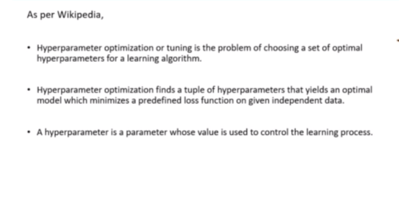
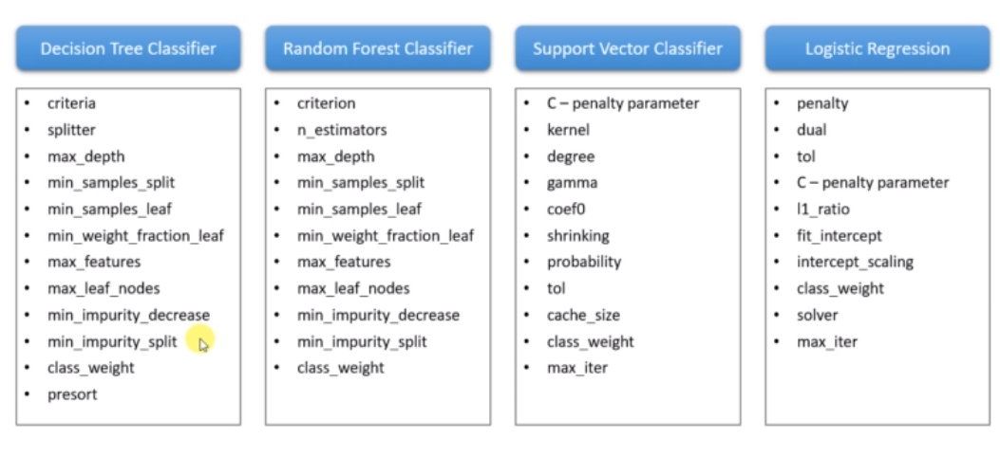
These are the hyperparameters for their respective models.
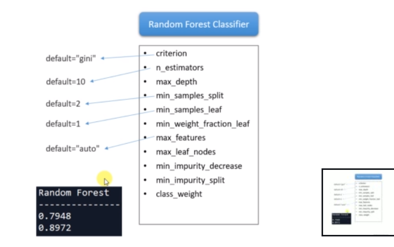 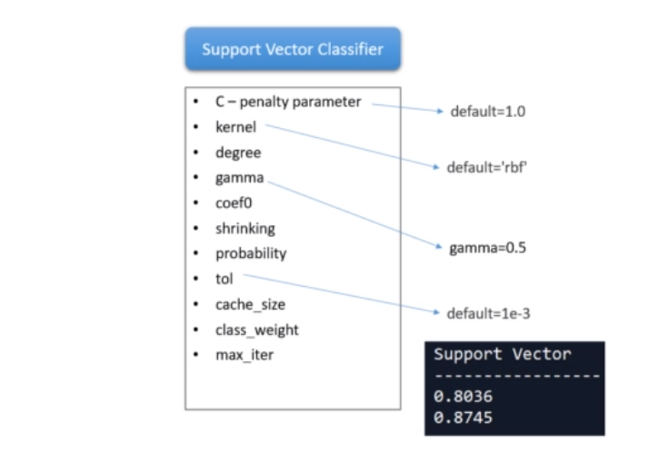 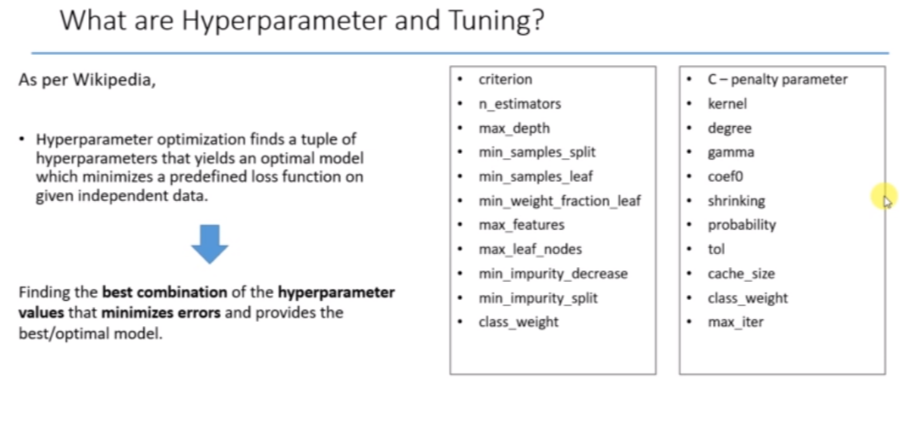
Grid Search and Random Search Approach
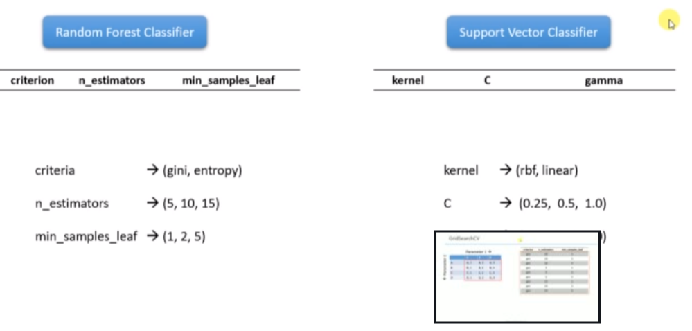
There are two model as random forest classifier and support vector classifier. There are three creteria for random forest classifier as criteria, n_estimators and min_samples_leaf. Also, there are three creteria for support vector classifier as kernel, c and gamma.
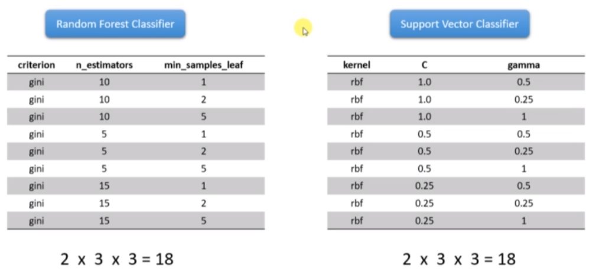
These are the possible combinations for the creteria.
Now, the poosile combinations can go upto 100. We have two approches to manage the combinations of hyperparameter tuning.
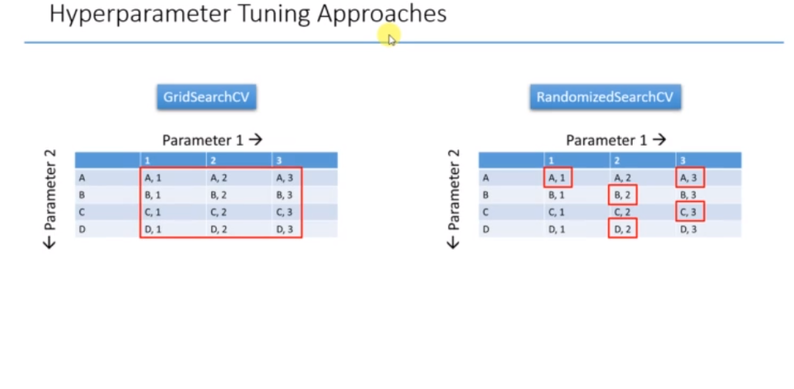 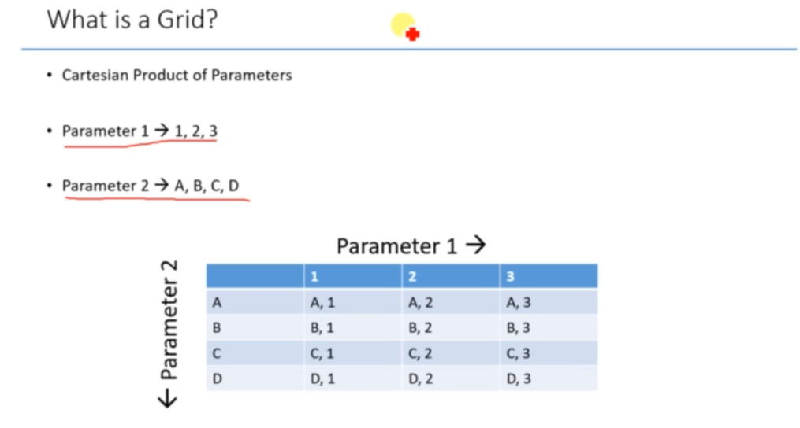 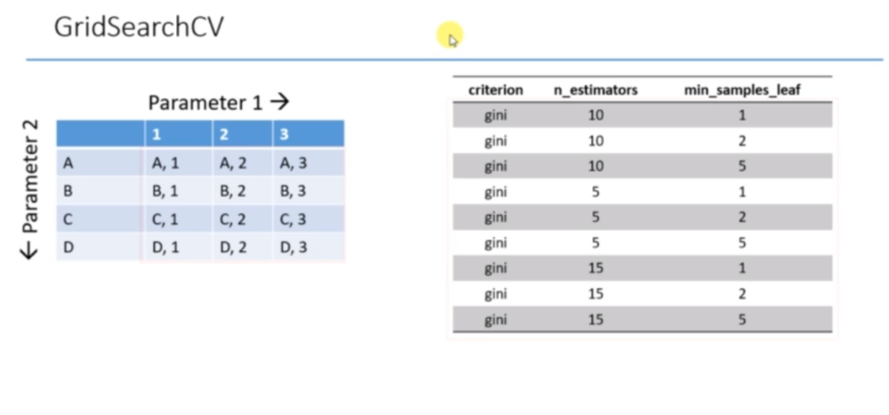 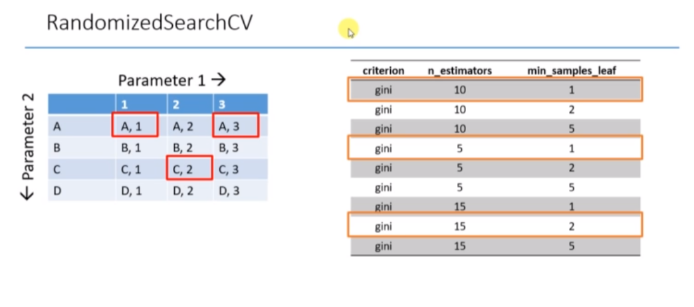
Statement of the Problem- Predict whether income exceeds $50K/yr based on census data. OR To determine whether a person makes over 50K a year or not.
To download the data, Please follow the link(https://archive.ics.uci.edu/ml/datasets/adult)
#Compare multiple Classifiers for diffrent train and test values
#import libraries
import pandas as pd
#Read dataset
data=pd.read_csv('04+-+decisiontreeAdultIncome.csv')
data
| age | wc | education | marital status | race | gender | hours per week | IncomeClass | |
|---|---|---|---|---|---|---|---|---|
| 0 | 38 | Private | HS-grad | Divorced | White | Male | 40 | <=50K |
| 1 | 28 | Private | Bachelors | Married | Black | Female | 40 | <=50K |
| 2 | 37 | Private | Masters | Married | White | Female | 40 | <=50K |
| 3 | 31 | Private | Masters | Never-married | White | Female | 50 | >50K |
| 4 | 42 | Private | Bachelors | Married | White | Male | 40 | >50K |
| ... | ... | ... | ... | ... | ... | ... | ... | ... |
| 19782 | 53 | Private | Masters | Married | White | Male | 40 | >50K |
| 19783 | 22 | Private | Some-college | Never-married | White | Male | 40 | <=50K |
| 19784 | 40 | Private | HS-grad | Married | White | Male | 40 | >50K |
| 19785 | 58 | Private | HS-grad | Widowed | White | Female | 40 | <=50K |
| 19786 | 22 | Private | HS-grad | Never-married | White | Male | 20 | <=50K |
19787 rows × 8 columns
Description about the data set and features
age: continuous.
workclass: Private, Self-emp-not-inc, Self-emp-inc, Federal-gov, Local-gov, State-gov, Without-pay, Never-worked.
fnlwgt: continuous.
education: Bachelors, Some-college, 11th, HS-grad, Prof-school, Assoc-acdm, Assoc-voc, 9th, 7th-8th, 12th, Masters, 1st-4th, 10th, Doctorate, 5th-6th, Preschool.
education-num: continuous.
marital-status: Married-civ-spouse, Divorced, Never-married, Separated, Widowed, Married-spouse-absent, Married-AF-spouse.
occupation: Tech-support, Craft-repair, Other-service, Sales, Exec-managerial, Prof-specialty, Handlers-cleaners, Machine-op-inspct, Adm-clerical, Farming-fishing, Transport-moving, Priv-house-serv, Protective-serv, Armed-Forces. relationship: Wife, Own-child, Husband, Not-in-family, Other-relative, Unmarried.
race: White, Asian-Pac-Islander, Amer-Indian-Eskimo, Other, Black.
sex: Female, Male.
capital-gain: continuous.
capital-loss: continuous.
hours-per-week: continuous.
native-country: United-States, Cambodia, England, Puerto-Rico, Canada, Germany, Outlying-US(Guam-USVI-etc), India, Japan, Greece, South, China, Cuba, Iran, Honduras, Philippines, Italy, Poland, Jamaica, Vietnam, Mexico, Portugal, Ireland, France, Dominican-Republic, Laos, Ecuador, Taiwan, Haiti, Columbia, Hungary, Guatemala, Nicaragua, Scotland, Thailand, Yugoslavia, El-Salvador, Trinadad&Tobago, Peru, Hong, Holand-Netherlands.
#create dummy variables
data_prep=pd.get_dummies(data,drop_first=True)
#Create the X and Y variables
X=data_prep.iloc[:,:-1]
Y=data_prep.iloc[:,-1]
#Import Decision Tree classifier from sklearn
from sklearn.tree import DecisionTreeClassifier
dtc= DecisionTreeClassifier(random_state=1234)
#Import Random forest classifier from sklearn
from sklearn.ensemble import RandomForestClassifier
rfc= RandomForestClassifier(random_state=1234)
#Import and train Support Vector Classifier
from sklearn.svm import SVC
svc=SVC(random_state=1234)
#Import and train Logistic Regression Classifier
from sklearn.linear_model import LogisticRegression
lrc= LogisticRegression(random_state=1234)
# import gridsearchCV
from sklearn.model_selection import GridSearchCV
#Create parameter grid
rfc_param={'n_estimators':[10,15,20],
'min_samples_split':[8,16],
'min_samples_leaf':[1,2,3,4,5]}
#Different possibles combinations of parameter
#(3*2*5=30)---> models
#Create the grid search objects
rfc_grid = GridSearchCV(estimator=rfc,
param_grid=rfc_param,
scoring='accuracy',
cv=10,
n_jobs=-1,
return_train_score=True)
#Number of jobs=Models*fold=30*10=300
rfc_param
{'n_estimators': [10, 15, 20],
'min_samples_split': [8, 16],
'min_samples_leaf': [1, 2, 3, 4, 5]}
rfc_grid
GridSearchCV(cv=10, estimator=RandomForestClassifier(random_state=1234),
n_jobs=-1,
param_grid={'min_samples_leaf': [1, 2, 3, 4, 5],
'min_samples_split': [8, 16],
'n_estimators': [10, 15, 20]},
return_train_score=True, scoring='accuracy')
#Fit the data to grid search
rfc_grid_fit=rfc_grid.fit(X,Y)
#Get the result of gridsearchCV
cv_result_rfc=rfc_grid_fit.cv_results_
cv_result_rfc
{'mean_fit_time': array([0.08981798, 0.13251729, 0.17240646, 0.08463399, 0.12502933,
0.16431663, 0.08483245, 0.12051504, 0.15429397, 0.08412423,
0.1181433 , 0.15717778, 0.08237281, 0.11726153, 0.14721596,
0.07732491, 0.1121851 , 0.1486079 , 0.07691717, 0.11144869,
0.14619713, 0.07554007, 0.10872929, 0.14215977, 0.07535431,
0.10589488, 0.1410949 , 0.0737294 , 0.10774119, 0.13895764]),
'std_fit_time': array([0.00176705, 0.00146753, 0.00217888, 0.00246066, 0.00333819,
0.00429726, 0.00330527, 0.00346819, 0.00250319, 0.00991523,
0.00391096, 0.00240418, 0.00209958, 0.00272761, 0.00233305,
0.00237155, 0.00331417, 0.00427517, 0.0020697 , 0.00159543,
0.00197808, 0.00219976, 0.00243129, 0.00246846, 0.00260488,
0.00287949, 0.00394394, 0.00224233, 0.00416284, 0.00310672]),
'mean_score_time': array([0.00776546, 0.01056986, 0.01311762, 0.00735488, 0.01001616,
0.012623 , 0.00736287, 0.00965412, 0.01228492, 0.00684979,
0.0094202 , 0.01165304, 0.00761404, 0.00927267, 0.01121576,
0.00668149, 0.00905895, 0.01129255, 0.00718234, 0.00895014,
0.01106281, 0.00659194, 0.009307 , 0.01089876, 0.00650423,
0.00972824, 0.01049013, 0.006422 , 0.00843167, 0.01114724]),
'std_score_time': array([0.00030762, 0.00065171, 0.00041759, 0.00029309, 0.00019579,
0.00011265, 0.00015116, 0.00016005, 0.00151546, 0.0002211 ,
0.00038539, 0.00027426, 0.00143498, 0.00028157, 0.00014462,
0.00015549, 0.00013053, 0.00016066, 0.00137678, 0.0001584 ,
0.00011582, 0.00020401, 0.00148279, 0.00011802, 0.00013388,
0.00231108, 0.00024754, 0.00011452, 0.00028491, 0.00141335]),
'param_min_samples_leaf': masked_array(data=[1, 1, 1, 1, 1, 1, 2, 2, 2, 2, 2, 2, 3, 3, 3, 3, 3, 3,
4, 4, 4, 4, 4, 4, 5, 5, 5, 5, 5, 5],
mask=[False, False, False, False, False, False, False, False,
False, False, False, False, False, False, False, False,
False, False, False, False, False, False, False, False,
False, False, False, False, False, False],
fill_value='?',
dtype=object),
'param_min_samples_split': masked_array(data=[8, 8, 8, 16, 16, 16, 8, 8, 8, 16, 16, 16, 8, 8, 8, 16,
16, 16, 8, 8, 8, 16, 16, 16, 8, 8, 8, 16, 16, 16],
mask=[False, False, False, False, False, False, False, False,
False, False, False, False, False, False, False, False,
False, False, False, False, False, False, False, False,
False, False, False, False, False, False],
fill_value='?',
dtype=object),
'param_n_estimators': masked_array(data=[10, 15, 20, 10, 15, 20, 10, 15, 20, 10, 15, 20, 10, 15,
20, 10, 15, 20, 10, 15, 20, 10, 15, 20, 10, 15, 20, 10,
15, 20],
mask=[False, False, False, False, False, False, False, False,
False, False, False, False, False, False, False, False,
False, False, False, False, False, False, False, False,
False, False, False, False, False, False],
fill_value='?',
dtype=object),
'params': [{'min_samples_leaf': 1,
'min_samples_split': 8,
'n_estimators': 10},
{'min_samples_leaf': 1, 'min_samples_split': 8, 'n_estimators': 15},
{'min_samples_leaf': 1, 'min_samples_split': 8, 'n_estimators': 20},
{'min_samples_leaf': 1, 'min_samples_split': 16, 'n_estimators': 10},
{'min_samples_leaf': 1, 'min_samples_split': 16, 'n_estimators': 15},
{'min_samples_leaf': 1, 'min_samples_split': 16, 'n_estimators': 20},
{'min_samples_leaf': 2, 'min_samples_split': 8, 'n_estimators': 10},
{'min_samples_leaf': 2, 'min_samples_split': 8, 'n_estimators': 15},
{'min_samples_leaf': 2, 'min_samples_split': 8, 'n_estimators': 20},
{'min_samples_leaf': 2, 'min_samples_split': 16, 'n_estimators': 10},
{'min_samples_leaf': 2, 'min_samples_split': 16, 'n_estimators': 15},
{'min_samples_leaf': 2, 'min_samples_split': 16, 'n_estimators': 20},
{'min_samples_leaf': 3, 'min_samples_split': 8, 'n_estimators': 10},
{'min_samples_leaf': 3, 'min_samples_split': 8, 'n_estimators': 15},
{'min_samples_leaf': 3, 'min_samples_split': 8, 'n_estimators': 20},
{'min_samples_leaf': 3, 'min_samples_split': 16, 'n_estimators': 10},
{'min_samples_leaf': 3, 'min_samples_split': 16, 'n_estimators': 15},
{'min_samples_leaf': 3, 'min_samples_split': 16, 'n_estimators': 20},
{'min_samples_leaf': 4, 'min_samples_split': 8, 'n_estimators': 10},
{'min_samples_leaf': 4, 'min_samples_split': 8, 'n_estimators': 15},
{'min_samples_leaf': 4, 'min_samples_split': 8, 'n_estimators': 20},
{'min_samples_leaf': 4, 'min_samples_split': 16, 'n_estimators': 10},
{'min_samples_leaf': 4, 'min_samples_split': 16, 'n_estimators': 15},
{'min_samples_leaf': 4, 'min_samples_split': 16, 'n_estimators': 20},
{'min_samples_leaf': 5, 'min_samples_split': 8, 'n_estimators': 10},
{'min_samples_leaf': 5, 'min_samples_split': 8, 'n_estimators': 15},
{'min_samples_leaf': 5, 'min_samples_split': 8, 'n_estimators': 20},
{'min_samples_leaf': 5, 'min_samples_split': 16, 'n_estimators': 10},
{'min_samples_leaf': 5, 'min_samples_split': 16, 'n_estimators': 15},
{'min_samples_leaf': 5, 'min_samples_split': 16, 'n_estimators': 20}],
'split0_test_score': array([0.79080344, 0.79737241, 0.79888833, 0.80192016, 0.80343608,
0.80090955, 0.8054573 , 0.79989894, 0.804952 , 0.81303689,
0.8145528 , 0.81505811, 0.8145528 , 0.80798383, 0.81859525,
0.81051036, 0.80899444, 0.81202628, 0.81354219, 0.81505811,
0.81152097, 0.81758464, 0.81859525, 0.82061647, 0.81758464,
0.82112178, 0.81707933, 0.81707933, 0.81910056, 0.81556342]),
'split1_test_score': array([0.79231935, 0.7963618 , 0.79181405, 0.79989894, 0.79888833,
0.80141486, 0.79838302, 0.80090955, 0.80394138, 0.79939363,
0.804952 , 0.80646791, 0.80192016, 0.80596261, 0.8054573 ,
0.80293077, 0.80646791, 0.80747852, 0.80242547, 0.80596261,
0.80646791, 0.80293077, 0.80394138, 0.80798383, 0.79939363,
0.80040424, 0.80141486, 0.80596261, 0.80697322, 0.804952 ]),
'split2_test_score': array([0.81202628, 0.81960586, 0.81960586, 0.81910056, 0.82011117,
0.82112178, 0.81859525, 0.82112178, 0.8226377 , 0.8226377 ,
0.82162708, 0.82061647, 0.8226377 , 0.82668014, 0.82415361,
0.82718545, 0.82516422, 0.82364831, 0.8226377 , 0.8226377 ,
0.8226377 , 0.82112178, 0.82061647, 0.82061647, 0.81758464,
0.81556342, 0.81606872, 0.82465892, 0.82415361, 0.823143 ]),
'split3_test_score': array([0.7877716 , 0.79029813, 0.79585649, 0.79181405, 0.79029813,
0.79332996, 0.79383527, 0.7963618 , 0.79737241, 0.80040424,
0.80242547, 0.8054573 , 0.80899444, 0.80848914, 0.80646791,
0.8054573 , 0.80293077, 0.80444669, 0.80646791, 0.80596261,
0.8054573 , 0.80697322, 0.80596261, 0.80747852, 0.80343608,
0.80899444, 0.80848914, 0.80747852, 0.8054573 , 0.804952 ]),
'split4_test_score': array([0.81202628, 0.80949975, 0.81101566, 0.81808994, 0.81707933,
0.8145528 , 0.82566953, 0.823143 , 0.81910056, 0.8226377 ,
0.81960586, 0.82162708, 0.82566953, 0.823143 , 0.82566953,
0.82364831, 0.82516422, 0.82112178, 0.823143 , 0.82415361,
0.82415361, 0.82668014, 0.82516422, 0.82162708, 0.82415361,
0.82566953, 0.82566953, 0.82769075, 0.81910056, 0.81910056]),
'split5_test_score': array([0.80697322, 0.81303689, 0.80444669, 0.81152097, 0.81152097,
0.81808994, 0.8226377 , 0.82617484, 0.81859525, 0.8145528 ,
0.81859525, 0.82819606, 0.8140475 , 0.8226377 , 0.8226377 ,
0.81859525, 0.81556342, 0.82112178, 0.82061647, 0.81960586,
0.82566953, 0.81707933, 0.81707933, 0.81960586, 0.81859525,
0.82364831, 0.82566953, 0.82011117, 0.82213239, 0.82011117]),
'split6_test_score': array([0.81000505, 0.81202628, 0.81253158, 0.81202628, 0.80798383,
0.81051036, 0.81000505, 0.8145528 , 0.81859525, 0.82061647,
0.81707933, 0.81758464, 0.81354219, 0.81758464, 0.81758464,
0.81303689, 0.81606872, 0.81152097, 0.8140475 , 0.81101566,
0.81051036, 0.81556342, 0.81354219, 0.81354219, 0.81556342,
0.8226377 , 0.81707933, 0.81808994, 0.81859525, 0.81505811]),
'split7_test_score': array([0.81648129, 0.82103134, 0.81951466, 0.82305359, 0.82355915,
0.82659252, 0.82861476, 0.82355915, 0.82760364, 0.82355915,
0.82962588, 0.83013145, 0.82608696, 0.82861476, 0.8255814 ,
0.81799798, 0.82608696, 0.82507583, 0.83013145, 0.8281092 ,
0.82962588, 0.82608696, 0.82760364, 0.82760364, 0.82153691,
0.8255814 , 0.82305359, 0.8281092 , 0.82962588, 0.8281092 ]),
'split8_test_score': array([0.79575329, 0.80283114, 0.80283114, 0.80637007, 0.80940344,
0.80839232, 0.809909 , 0.81648129, 0.81698686, 0.81193124,
0.81547017, 0.81749242, 0.81294237, 0.81294237, 0.81648129,
0.81698686, 0.81395349, 0.81648129, 0.81193124, 0.81698686,
0.81951466, 0.81496461, 0.81698686, 0.82002022, 0.82002022,
0.81850354, 0.8190091 , 0.81698686, 0.81951466, 0.81850354]),
'split9_test_score': array([0.80687563, 0.81597573, 0.81344793, 0.809909 , 0.80738119,
0.81142568, 0.809909 , 0.80637007, 0.81041456, 0.81496461,
0.8190091 , 0.81445905, 0.82103134, 0.81648129, 0.81749242,
0.81749242, 0.81951466, 0.82052578, 0.81597573, 0.81597573,
0.82052578, 0.81547017, 0.81294237, 0.81496461, 0.8124368 ,
0.81547017, 0.81294237, 0.81749242, 0.81799798, 0.82103134]),
'mean_test_score': array([0.80310354, 0.80780393, 0.80699524, 0.80937036, 0.80896616,
0.81063398, 0.81230159, 0.81285732, 0.81401996, 0.81437344,
0.8162943 , 0.81770905, 0.8161425 , 0.81705195, 0.8180121 ,
0.81538416, 0.81599088, 0.81634472, 0.81609187, 0.81654679,
0.81760837, 0.8164455 , 0.81624343, 0.81740589, 0.81503052,
0.81775945, 0.81664755, 0.81836597, 0.81826514, 0.81705243]),
'std_test_score': array([0.00985756, 0.01000018, 0.00921039, 0.0091233 , 0.00945423,
0.00959307, 0.01090672, 0.01052067, 0.0089956 , 0.00829225,
0.00745065, 0.00763032, 0.00730091, 0.00768587, 0.00684888,
0.00717367, 0.00772782, 0.00674393, 0.0078584 , 0.00703839,
0.0080553 , 0.00705384, 0.00713982, 0.00601929, 0.0074978 ,
0.00763007, 0.00722798, 0.00708029, 0.00688028, 0.00699908]),
'rank_test_score': array([30, 28, 29, 26, 27, 25, 24, 23, 22, 21, 14, 5, 16, 9, 3, 19, 18,
13, 17, 11, 6, 12, 15, 7, 20, 4, 10, 1, 2, 8], dtype=int32),
'split0_train_score': array([0.87146226, 0.87230458, 0.87365229, 0.85601977, 0.85877134,
0.85899596, 0.85882749, 0.86011905, 0.8607929 , 0.84798967,
0.8484389 , 0.85017969, 0.84737197, 0.84956199, 0.85017969,
0.84310422, 0.84467655, 0.8453504 , 0.84394654, 0.84624888,
0.84731581, 0.84035265, 0.84074573, 0.8415319 , 0.83956649,
0.83928571, 0.8402965 , 0.83878032, 0.83945418, 0.83951033]),
'split1_train_score': array([0.87185535, 0.87410153, 0.87573001, 0.85820979, 0.86107367,
0.86230907, 0.85905211, 0.86073675, 0.86152291, 0.85023585,
0.85107817, 0.85169587, 0.84838275, 0.85135894, 0.8509097 ,
0.84417116, 0.84613657, 0.8464735 , 0.84428347, 0.84641734,
0.84703504, 0.84360961, 0.84383423, 0.84428347, 0.84007188,
0.84175651, 0.84186882, 0.84080189, 0.84136343, 0.84080189]),
'split2_train_score': array([0.86983378, 0.87224843, 0.87264151, 0.85635669, 0.85714286,
0.85927673, 0.85753594, 0.8583221 , 0.85871518, 0.84832659,
0.84821429, 0.84787736, 0.85046047, 0.85068509, 0.8509097 ,
0.84433962, 0.8446204 , 0.84445193, 0.8434973 , 0.84372192,
0.8446204 , 0.83979111, 0.83894879, 0.84057727, 0.83866801,
0.8396788 , 0.83962264, 0.8384434 , 0.83962264, 0.84040881]),
'split3_train_score': array([0.87264151, 0.87359614, 0.87544924, 0.85961366, 0.85989443,
0.86096137, 0.86039982, 0.86096137, 0.86062444, 0.84944969,
0.85158356, 0.85158356, 0.85119048, 0.85186433, 0.85265049,
0.84501348, 0.84742812, 0.84686658, 0.84574349, 0.84630503,
0.8478212 , 0.8421496 , 0.84175651, 0.84220575, 0.84052111,
0.84316038, 0.84372192, 0.83883648, 0.84085804, 0.84119497]),
'split4_train_score': array([0.87084456, 0.87382075, 0.87477538, 0.85697439, 0.85882749,
0.8595575 , 0.85747978, 0.8583221 , 0.86034367, 0.84883199,
0.84978661, 0.85096586, 0.85051662, 0.85135894, 0.85130279,
0.8434973 , 0.84467655, 0.8458558 , 0.8428796 , 0.84366577,
0.84546271, 0.83928571, 0.8409142 , 0.84158805, 0.83838724,
0.84040881, 0.8410265 , 0.83805031, 0.83821878, 0.83894879]),
'split5_train_score': array([0.87022686, 0.87179919, 0.87382075, 0.8570867 , 0.85764825,
0.85798518, 0.85534591, 0.85792902, 0.8583221 , 0.84776505,
0.84900045, 0.85046047, 0.84770889, 0.84978661, 0.85068509,
0.84332884, 0.84501348, 0.84501348, 0.84293576, 0.84529425,
0.84608041, 0.83911725, 0.8410265 , 0.84113881, 0.83861186,
0.83883648, 0.8390611 , 0.83771339, 0.83866801, 0.84035265]),
'split6_train_score': array([0.87078841, 0.87213612, 0.87331536, 0.85686208, 0.85843441,
0.85877134, 0.8570867 , 0.85865903, 0.85916442, 0.84742812,
0.84810198, 0.84855121, 0.84652965, 0.84933738, 0.84973046,
0.84467655, 0.8465858 , 0.84669811, 0.84478886, 0.84501348,
0.84568733, 0.83833109, 0.83956649, 0.84074573, 0.83855571,
0.84130728, 0.84119497, 0.83805031, 0.83878032, 0.84001572]),
'split7_train_score': array([0.87045876, 0.87130103, 0.87231175, 0.85720703, 0.8580493 ,
0.85827391, 0.85529788, 0.85664552, 0.85737548, 0.84816666,
0.84928968, 0.84884047, 0.84968274, 0.85091808, 0.85091808,
0.8437307 , 0.84490988, 0.84558369, 0.84075467, 0.84243922,
0.84170925, 0.84137234, 0.8417654 , 0.84271997, 0.83951934,
0.83940704, 0.84041777, 0.8377225 , 0.83789095, 0.83862092]),
'split8_train_score': array([0.87191869, 0.87371554, 0.87427705, 0.85872312, 0.85922848,
0.85973384, 0.85821776, 0.85894772, 0.85962154, 0.84889663,
0.85013196, 0.85136729, 0.84766129, 0.84912123, 0.84895278,
0.84485373, 0.84485373, 0.84648212, 0.84429221, 0.84738054,
0.845696 , 0.84086698, 0.84243922, 0.84300073, 0.83856477,
0.84086698, 0.84053007, 0.83721714, 0.83940704, 0.84019316]),
'split9_train_score': array([0.86916727, 0.87248021, 0.87371554, 0.85687012, 0.85855466,
0.8601269 , 0.85715088, 0.85771239, 0.85861081, 0.84878432,
0.84951429, 0.84962659, 0.84940199, 0.8518165 , 0.85187265,
0.84474142, 0.84648212, 0.84636981, 0.84305688, 0.84294458,
0.84457297, 0.83974395, 0.84030546, 0.84114773, 0.83648717,
0.83890168, 0.83929474, 0.83895783, 0.84002471, 0.83940704]),
'mean_train_score': array([0.87091975, 0.87275035, 0.87396889, 0.85739234, 0.85876249,
0.85959918, 0.85763943, 0.8588355 , 0.85950935, 0.84858746,
0.84951399, 0.85011484, 0.84889069, 0.85058091, 0.85081114,
0.8441457 , 0.84553832, 0.84591454, 0.84361788, 0.8449431 ,
0.84560011, 0.84046203, 0.84113025, 0.84189394, 0.83889536,
0.84036097, 0.8407035 , 0.83845736, 0.83942881, 0.83994543]),
'std_train_score': array([0.00100489, 0.00092328, 0.0010564 , 0.00105765, 0.00106623,
0.00122523, 0.00150615, 0.00131269, 0.00123183, 0.00079232,
0.0011108 , 0.00128011, 0.00149441, 0.00099273, 0.00099089,
0.00065375, 0.00096872, 0.00075793, 0.0012819 , 0.00158711,
0.00165396, 0.00149862, 0.00133829, 0.00110082, 0.00106214,
0.00133877, 0.00130163, 0.0009465 , 0.00104918, 0.00077256])}
#Covert the results in data format
cv_result_rfc=pd.DataFrame.from_dict(rfc_grid_fit.cv_results_)
cv_result_rfc
| mean_fit_time | std_fit_time | mean_score_time | std_score_time | param_min_samples_leaf | param_min_samples_split | param_n_estimators | params | split0_test_score | split1_test_score | ... | split2_train_score | split3_train_score | split4_train_score | split5_train_score | split6_train_score | split7_train_score | split8_train_score | split9_train_score | mean_train_score | std_train_score | |
|---|---|---|---|---|---|---|---|---|---|---|---|---|---|---|---|---|---|---|---|---|---|
| 0 | 0.089818 | 0.001767 | 0.007765 | 0.000308 | 1 | 8 | 10 | {'min_samples_leaf': 1, 'min_samples_split': 8... | 0.790803 | 0.792319 | ... | 0.869834 | 0.872642 | 0.870845 | 0.870227 | 0.870788 | 0.870459 | 0.871919 | 0.869167 | 0.870920 | 0.001005 |
| 1 | 0.132517 | 0.001468 | 0.010570 | 0.000652 | 1 | 8 | 15 | {'min_samples_leaf': 1, 'min_samples_split': 8... | 0.797372 | 0.796362 | ... | 0.872248 | 0.873596 | 0.873821 | 0.871799 | 0.872136 | 0.871301 | 0.873716 | 0.872480 | 0.872750 | 0.000923 |
| 2 | 0.172406 | 0.002179 | 0.013118 | 0.000418 | 1 | 8 | 20 | {'min_samples_leaf': 1, 'min_samples_split': 8... | 0.798888 | 0.791814 | ... | 0.872642 | 0.875449 | 0.874775 | 0.873821 | 0.873315 | 0.872312 | 0.874277 | 0.873716 | 0.873969 | 0.001056 |
| 3 | 0.084634 | 0.002461 | 0.007355 | 0.000293 | 1 | 16 | 10 | {'min_samples_leaf': 1, 'min_samples_split': 1... | 0.801920 | 0.799899 | ... | 0.856357 | 0.859614 | 0.856974 | 0.857087 | 0.856862 | 0.857207 | 0.858723 | 0.856870 | 0.857392 | 0.001058 |
| 4 | 0.125029 | 0.003338 | 0.010016 | 0.000196 | 1 | 16 | 15 | {'min_samples_leaf': 1, 'min_samples_split': 1... | 0.803436 | 0.798888 | ... | 0.857143 | 0.859894 | 0.858827 | 0.857648 | 0.858434 | 0.858049 | 0.859228 | 0.858555 | 0.858762 | 0.001066 |
| 5 | 0.164317 | 0.004297 | 0.012623 | 0.000113 | 1 | 16 | 20 | {'min_samples_leaf': 1, 'min_samples_split': 1... | 0.800910 | 0.801415 | ... | 0.859277 | 0.860961 | 0.859558 | 0.857985 | 0.858771 | 0.858274 | 0.859734 | 0.860127 | 0.859599 | 0.001225 |
| 6 | 0.084832 | 0.003305 | 0.007363 | 0.000151 | 2 | 8 | 10 | {'min_samples_leaf': 2, 'min_samples_split': 8... | 0.805457 | 0.798383 | ... | 0.857536 | 0.860400 | 0.857480 | 0.855346 | 0.857087 | 0.855298 | 0.858218 | 0.857151 | 0.857639 | 0.001506 |
| 7 | 0.120515 | 0.003468 | 0.009654 | 0.000160 | 2 | 8 | 15 | {'min_samples_leaf': 2, 'min_samples_split': 8... | 0.799899 | 0.800910 | ... | 0.858322 | 0.860961 | 0.858322 | 0.857929 | 0.858659 | 0.856646 | 0.858948 | 0.857712 | 0.858836 | 0.001313 |
| 8 | 0.154294 | 0.002503 | 0.012285 | 0.001515 | 2 | 8 | 20 | {'min_samples_leaf': 2, 'min_samples_split': 8... | 0.804952 | 0.803941 | ... | 0.858715 | 0.860624 | 0.860344 | 0.858322 | 0.859164 | 0.857375 | 0.859622 | 0.858611 | 0.859509 | 0.001232 |
| 9 | 0.084124 | 0.009915 | 0.006850 | 0.000221 | 2 | 16 | 10 | {'min_samples_leaf': 2, 'min_samples_split': 1... | 0.813037 | 0.799394 | ... | 0.848327 | 0.849450 | 0.848832 | 0.847765 | 0.847428 | 0.848167 | 0.848897 | 0.848784 | 0.848587 | 0.000792 |
| 10 | 0.118143 | 0.003911 | 0.009420 | 0.000385 | 2 | 16 | 15 | {'min_samples_leaf': 2, 'min_samples_split': 1... | 0.814553 | 0.804952 | ... | 0.848214 | 0.851584 | 0.849787 | 0.849000 | 0.848102 | 0.849290 | 0.850132 | 0.849514 | 0.849514 | 0.001111 |
| 11 | 0.157178 | 0.002404 | 0.011653 | 0.000274 | 2 | 16 | 20 | {'min_samples_leaf': 2, 'min_samples_split': 1... | 0.815058 | 0.806468 | ... | 0.847877 | 0.851584 | 0.850966 | 0.850460 | 0.848551 | 0.848840 | 0.851367 | 0.849627 | 0.850115 | 0.001280 |
| 12 | 0.082373 | 0.002100 | 0.007614 | 0.001435 | 3 | 8 | 10 | {'min_samples_leaf': 3, 'min_samples_split': 8... | 0.814553 | 0.801920 | ... | 0.850460 | 0.851190 | 0.850517 | 0.847709 | 0.846530 | 0.849683 | 0.847661 | 0.849402 | 0.848891 | 0.001494 |
| 13 | 0.117262 | 0.002728 | 0.009273 | 0.000282 | 3 | 8 | 15 | {'min_samples_leaf': 3, 'min_samples_split': 8... | 0.807984 | 0.805963 | ... | 0.850685 | 0.851864 | 0.851359 | 0.849787 | 0.849337 | 0.850918 | 0.849121 | 0.851816 | 0.850581 | 0.000993 |
| 14 | 0.147216 | 0.002333 | 0.011216 | 0.000145 | 3 | 8 | 20 | {'min_samples_leaf': 3, 'min_samples_split': 8... | 0.818595 | 0.805457 | ... | 0.850910 | 0.852650 | 0.851303 | 0.850685 | 0.849730 | 0.850918 | 0.848953 | 0.851873 | 0.850811 | 0.000991 |
| 15 | 0.077325 | 0.002372 | 0.006681 | 0.000155 | 3 | 16 | 10 | {'min_samples_leaf': 3, 'min_samples_split': 1... | 0.810510 | 0.802931 | ... | 0.844340 | 0.845013 | 0.843497 | 0.843329 | 0.844677 | 0.843731 | 0.844854 | 0.844741 | 0.844146 | 0.000654 |
| 16 | 0.112185 | 0.003314 | 0.009059 | 0.000131 | 3 | 16 | 15 | {'min_samples_leaf': 3, 'min_samples_split': 1... | 0.808994 | 0.806468 | ... | 0.844620 | 0.847428 | 0.844677 | 0.845013 | 0.846586 | 0.844910 | 0.844854 | 0.846482 | 0.845538 | 0.000969 |
| 17 | 0.148608 | 0.004275 | 0.011293 | 0.000161 | 3 | 16 | 20 | {'min_samples_leaf': 3, 'min_samples_split': 1... | 0.812026 | 0.807479 | ... | 0.844452 | 0.846867 | 0.845856 | 0.845013 | 0.846698 | 0.845584 | 0.846482 | 0.846370 | 0.845915 | 0.000758 |
| 18 | 0.076917 | 0.002070 | 0.007182 | 0.001377 | 4 | 8 | 10 | {'min_samples_leaf': 4, 'min_samples_split': 8... | 0.813542 | 0.802425 | ... | 0.843497 | 0.845743 | 0.842880 | 0.842936 | 0.844789 | 0.840755 | 0.844292 | 0.843057 | 0.843618 | 0.001282 |
| 19 | 0.111449 | 0.001595 | 0.008950 | 0.000158 | 4 | 8 | 15 | {'min_samples_leaf': 4, 'min_samples_split': 8... | 0.815058 | 0.805963 | ... | 0.843722 | 0.846305 | 0.843666 | 0.845294 | 0.845013 | 0.842439 | 0.847381 | 0.842945 | 0.844943 | 0.001587 |
| 20 | 0.146197 | 0.001978 | 0.011063 | 0.000116 | 4 | 8 | 20 | {'min_samples_leaf': 4, 'min_samples_split': 8... | 0.811521 | 0.806468 | ... | 0.844620 | 0.847821 | 0.845463 | 0.846080 | 0.845687 | 0.841709 | 0.845696 | 0.844573 | 0.845600 | 0.001654 |
| 21 | 0.075540 | 0.002200 | 0.006592 | 0.000204 | 4 | 16 | 10 | {'min_samples_leaf': 4, 'min_samples_split': 1... | 0.817585 | 0.802931 | ... | 0.839791 | 0.842150 | 0.839286 | 0.839117 | 0.838331 | 0.841372 | 0.840867 | 0.839744 | 0.840462 | 0.001499 |
| 22 | 0.108729 | 0.002431 | 0.009307 | 0.001483 | 4 | 16 | 15 | {'min_samples_leaf': 4, 'min_samples_split': 1... | 0.818595 | 0.803941 | ... | 0.838949 | 0.841757 | 0.840914 | 0.841027 | 0.839566 | 0.841765 | 0.842439 | 0.840305 | 0.841130 | 0.001338 |
| 23 | 0.142160 | 0.002468 | 0.010899 | 0.000118 | 4 | 16 | 20 | {'min_samples_leaf': 4, 'min_samples_split': 1... | 0.820616 | 0.807984 | ... | 0.840577 | 0.842206 | 0.841588 | 0.841139 | 0.840746 | 0.842720 | 0.843001 | 0.841148 | 0.841894 | 0.001101 |
| 24 | 0.075354 | 0.002605 | 0.006504 | 0.000134 | 5 | 8 | 10 | {'min_samples_leaf': 5, 'min_samples_split': 8... | 0.817585 | 0.799394 | ... | 0.838668 | 0.840521 | 0.838387 | 0.838612 | 0.838556 | 0.839519 | 0.838565 | 0.836487 | 0.838895 | 0.001062 |
| 25 | 0.105895 | 0.002879 | 0.009728 | 0.002311 | 5 | 8 | 15 | {'min_samples_leaf': 5, 'min_samples_split': 8... | 0.821122 | 0.800404 | ... | 0.839679 | 0.843160 | 0.840409 | 0.838836 | 0.841307 | 0.839407 | 0.840867 | 0.838902 | 0.840361 | 0.001339 |
| 26 | 0.141095 | 0.003944 | 0.010490 | 0.000248 | 5 | 8 | 20 | {'min_samples_leaf': 5, 'min_samples_split': 8... | 0.817079 | 0.801415 | ... | 0.839623 | 0.843722 | 0.841027 | 0.839061 | 0.841195 | 0.840418 | 0.840530 | 0.839295 | 0.840704 | 0.001302 |
| 27 | 0.073729 | 0.002242 | 0.006422 | 0.000115 | 5 | 16 | 10 | {'min_samples_leaf': 5, 'min_samples_split': 1... | 0.817079 | 0.805963 | ... | 0.838443 | 0.838836 | 0.838050 | 0.837713 | 0.838050 | 0.837722 | 0.837217 | 0.838958 | 0.838457 | 0.000946 |
| 28 | 0.107741 | 0.004163 | 0.008432 | 0.000285 | 5 | 16 | 15 | {'min_samples_leaf': 5, 'min_samples_split': 1... | 0.819101 | 0.806973 | ... | 0.839623 | 0.840858 | 0.838219 | 0.838668 | 0.838780 | 0.837891 | 0.839407 | 0.840025 | 0.839429 | 0.001049 |
| 29 | 0.138958 | 0.003107 | 0.011147 | 0.001413 | 5 | 16 | 20 | {'min_samples_leaf': 5, 'min_samples_split': 1... | 0.815563 | 0.804952 | ... | 0.840409 | 0.841195 | 0.838949 | 0.840353 | 0.840016 | 0.838621 | 0.840193 | 0.839407 | 0.839945 | 0.000773 |
30 rows × 33 columns
cv_result_rfc.shape
(30, 33)
import pandas as pd
df=pd.DataFrame(cv_result_rfc)
df.to_csv('cv_result_rfc.csv')
We exported the result in csv and short the rank_test_score in ascending order in csv file.
#Implement the GridSearch for Logistic Regression
lrc_param={'C': [0.01,0.1,0.5,1,2,5,10],
'penalty': ['l2'],
'solver':['liblinear','lbfgs','saga']}
#number of combinations= 7*1*3=21
#Number of jobs= 21*10
#Create the grid search objects
lrc_grid = GridSearchCV(estimator=lrc,
param_grid=lrc_param,
scoring='accuracy',
cv=10,
n_jobs=-1,
return_train_score=True)
#Fit the data to grid search
lrc_grid_fit=lrc_grid.fit(X,Y)
/opt/hostedtoolcache/Python/3.7.10/x64/lib/python3.7/site-packages/sklearn/linear_model/_logistic.py:765: ConvergenceWarning: lbfgs failed to converge (status=1):
STOP: TOTAL NO. of ITERATIONS REACHED LIMIT.
Increase the number of iterations (max_iter) or scale the data as shown in:
https://scikit-learn.org/stable/modules/preprocessing.html
Please also refer to the documentation for alternative solver options:
https://scikit-learn.org/stable/modules/linear_model.html#logistic-regression
extra_warning_msg=_LOGISTIC_SOLVER_CONVERGENCE_MSG)
/opt/hostedtoolcache/Python/3.7.10/x64/lib/python3.7/site-packages/sklearn/linear_model/_logistic.py:765: ConvergenceWarning: lbfgs failed to converge (status=1):
STOP: TOTAL NO. of ITERATIONS REACHED LIMIT.
Increase the number of iterations (max_iter) or scale the data as shown in:
https://scikit-learn.org/stable/modules/preprocessing.html
Please also refer to the documentation for alternative solver options:
https://scikit-learn.org/stable/modules/linear_model.html#logistic-regression
extra_warning_msg=_LOGISTIC_SOLVER_CONVERGENCE_MSG)
/opt/hostedtoolcache/Python/3.7.10/x64/lib/python3.7/site-packages/sklearn/linear_model/_logistic.py:765: ConvergenceWarning: lbfgs failed to converge (status=1):
STOP: TOTAL NO. of ITERATIONS REACHED LIMIT.
Increase the number of iterations (max_iter) or scale the data as shown in:
https://scikit-learn.org/stable/modules/preprocessing.html
Please also refer to the documentation for alternative solver options:
https://scikit-learn.org/stable/modules/linear_model.html#logistic-regression
extra_warning_msg=_LOGISTIC_SOLVER_CONVERGENCE_MSG)
/opt/hostedtoolcache/Python/3.7.10/x64/lib/python3.7/site-packages/sklearn/linear_model/_logistic.py:765: ConvergenceWarning: lbfgs failed to converge (status=1):
STOP: TOTAL NO. of ITERATIONS REACHED LIMIT.
Increase the number of iterations (max_iter) or scale the data as shown in:
https://scikit-learn.org/stable/modules/preprocessing.html
Please also refer to the documentation for alternative solver options:
https://scikit-learn.org/stable/modules/linear_model.html#logistic-regression
extra_warning_msg=_LOGISTIC_SOLVER_CONVERGENCE_MSG)
/opt/hostedtoolcache/Python/3.7.10/x64/lib/python3.7/site-packages/sklearn/linear_model/_logistic.py:765: ConvergenceWarning: lbfgs failed to converge (status=1):
STOP: TOTAL NO. of ITERATIONS REACHED LIMIT.
Increase the number of iterations (max_iter) or scale the data as shown in:
https://scikit-learn.org/stable/modules/preprocessing.html
Please also refer to the documentation for alternative solver options:
https://scikit-learn.org/stable/modules/linear_model.html#logistic-regression
extra_warning_msg=_LOGISTIC_SOLVER_CONVERGENCE_MSG)
/opt/hostedtoolcache/Python/3.7.10/x64/lib/python3.7/site-packages/sklearn/linear_model/_logistic.py:765: ConvergenceWarning: lbfgs failed to converge (status=1):
STOP: TOTAL NO. of ITERATIONS REACHED LIMIT.
Increase the number of iterations (max_iter) or scale the data as shown in:
https://scikit-learn.org/stable/modules/preprocessing.html
Please also refer to the documentation for alternative solver options:
https://scikit-learn.org/stable/modules/linear_model.html#logistic-regression
extra_warning_msg=_LOGISTIC_SOLVER_CONVERGENCE_MSG)
/opt/hostedtoolcache/Python/3.7.10/x64/lib/python3.7/site-packages/sklearn/linear_model/_sag.py:329: ConvergenceWarning: The max_iter was reached which means the coef_ did not converge
"the coef_ did not converge", ConvergenceWarning)
/opt/hostedtoolcache/Python/3.7.10/x64/lib/python3.7/site-packages/sklearn/linear_model/_sag.py:329: ConvergenceWarning: The max_iter was reached which means the coef_ did not converge
"the coef_ did not converge", ConvergenceWarning)
/opt/hostedtoolcache/Python/3.7.10/x64/lib/python3.7/site-packages/sklearn/linear_model/_sag.py:329: ConvergenceWarning: The max_iter was reached which means the coef_ did not converge
"the coef_ did not converge", ConvergenceWarning)
/opt/hostedtoolcache/Python/3.7.10/x64/lib/python3.7/site-packages/sklearn/linear_model/_sag.py:329: ConvergenceWarning: The max_iter was reached which means the coef_ did not converge
"the coef_ did not converge", ConvergenceWarning)
/opt/hostedtoolcache/Python/3.7.10/x64/lib/python3.7/site-packages/sklearn/linear_model/_logistic.py:765: ConvergenceWarning: lbfgs failed to converge (status=1):
STOP: TOTAL NO. of ITERATIONS REACHED LIMIT.
Increase the number of iterations (max_iter) or scale the data as shown in:
https://scikit-learn.org/stable/modules/preprocessing.html
Please also refer to the documentation for alternative solver options:
https://scikit-learn.org/stable/modules/linear_model.html#logistic-regression
extra_warning_msg=_LOGISTIC_SOLVER_CONVERGENCE_MSG)
/opt/hostedtoolcache/Python/3.7.10/x64/lib/python3.7/site-packages/sklearn/linear_model/_logistic.py:765: ConvergenceWarning: lbfgs failed to converge (status=1):
STOP: TOTAL NO. of ITERATIONS REACHED LIMIT.
Increase the number of iterations (max_iter) or scale the data as shown in:
https://scikit-learn.org/stable/modules/preprocessing.html
Please also refer to the documentation for alternative solver options:
https://scikit-learn.org/stable/modules/linear_model.html#logistic-regression
extra_warning_msg=_LOGISTIC_SOLVER_CONVERGENCE_MSG)
/opt/hostedtoolcache/Python/3.7.10/x64/lib/python3.7/site-packages/sklearn/linear_model/_logistic.py:765: ConvergenceWarning: lbfgs failed to converge (status=1):
STOP: TOTAL NO. of ITERATIONS REACHED LIMIT.
Increase the number of iterations (max_iter) or scale the data as shown in:
https://scikit-learn.org/stable/modules/preprocessing.html
Please also refer to the documentation for alternative solver options:
https://scikit-learn.org/stable/modules/linear_model.html#logistic-regression
extra_warning_msg=_LOGISTIC_SOLVER_CONVERGENCE_MSG)
/opt/hostedtoolcache/Python/3.7.10/x64/lib/python3.7/site-packages/sklearn/linear_model/_logistic.py:765: ConvergenceWarning: lbfgs failed to converge (status=1):
STOP: TOTAL NO. of ITERATIONS REACHED LIMIT.
Increase the number of iterations (max_iter) or scale the data as shown in:
https://scikit-learn.org/stable/modules/preprocessing.html
Please also refer to the documentation for alternative solver options:
https://scikit-learn.org/stable/modules/linear_model.html#logistic-regression
extra_warning_msg=_LOGISTIC_SOLVER_CONVERGENCE_MSG)
/opt/hostedtoolcache/Python/3.7.10/x64/lib/python3.7/site-packages/sklearn/linear_model/_logistic.py:765: ConvergenceWarning: lbfgs failed to converge (status=1):
STOP: TOTAL NO. of ITERATIONS REACHED LIMIT.
Increase the number of iterations (max_iter) or scale the data as shown in:
https://scikit-learn.org/stable/modules/preprocessing.html
Please also refer to the documentation for alternative solver options:
https://scikit-learn.org/stable/modules/linear_model.html#logistic-regression
extra_warning_msg=_LOGISTIC_SOLVER_CONVERGENCE_MSG)
/opt/hostedtoolcache/Python/3.7.10/x64/lib/python3.7/site-packages/sklearn/linear_model/_logistic.py:765: ConvergenceWarning: lbfgs failed to converge (status=1):
STOP: TOTAL NO. of ITERATIONS REACHED LIMIT.
Increase the number of iterations (max_iter) or scale the data as shown in:
https://scikit-learn.org/stable/modules/preprocessing.html
Please also refer to the documentation for alternative solver options:
https://scikit-learn.org/stable/modules/linear_model.html#logistic-regression
extra_warning_msg=_LOGISTIC_SOLVER_CONVERGENCE_MSG)
/opt/hostedtoolcache/Python/3.7.10/x64/lib/python3.7/site-packages/sklearn/linear_model/_sag.py:329: ConvergenceWarning: The max_iter was reached which means the coef_ did not converge
"the coef_ did not converge", ConvergenceWarning)
/opt/hostedtoolcache/Python/3.7.10/x64/lib/python3.7/site-packages/sklearn/linear_model/_sag.py:329: ConvergenceWarning: The max_iter was reached which means the coef_ did not converge
"the coef_ did not converge", ConvergenceWarning)
/opt/hostedtoolcache/Python/3.7.10/x64/lib/python3.7/site-packages/sklearn/linear_model/_sag.py:329: ConvergenceWarning: The max_iter was reached which means the coef_ did not converge
"the coef_ did not converge", ConvergenceWarning)
/opt/hostedtoolcache/Python/3.7.10/x64/lib/python3.7/site-packages/sklearn/linear_model/_logistic.py:765: ConvergenceWarning: lbfgs failed to converge (status=1):
STOP: TOTAL NO. of ITERATIONS REACHED LIMIT.
Increase the number of iterations (max_iter) or scale the data as shown in:
https://scikit-learn.org/stable/modules/preprocessing.html
Please also refer to the documentation for alternative solver options:
https://scikit-learn.org/stable/modules/linear_model.html#logistic-regression
extra_warning_msg=_LOGISTIC_SOLVER_CONVERGENCE_MSG)
/opt/hostedtoolcache/Python/3.7.10/x64/lib/python3.7/site-packages/sklearn/linear_model/_logistic.py:765: ConvergenceWarning: lbfgs failed to converge (status=1):
STOP: TOTAL NO. of ITERATIONS REACHED LIMIT.
Increase the number of iterations (max_iter) or scale the data as shown in:
https://scikit-learn.org/stable/modules/preprocessing.html
Please also refer to the documentation for alternative solver options:
https://scikit-learn.org/stable/modules/linear_model.html#logistic-regression
extra_warning_msg=_LOGISTIC_SOLVER_CONVERGENCE_MSG)
/opt/hostedtoolcache/Python/3.7.10/x64/lib/python3.7/site-packages/sklearn/linear_model/_logistic.py:765: ConvergenceWarning: lbfgs failed to converge (status=1):
STOP: TOTAL NO. of ITERATIONS REACHED LIMIT.
Increase the number of iterations (max_iter) or scale the data as shown in:
https://scikit-learn.org/stable/modules/preprocessing.html
Please also refer to the documentation for alternative solver options:
https://scikit-learn.org/stable/modules/linear_model.html#logistic-regression
extra_warning_msg=_LOGISTIC_SOLVER_CONVERGENCE_MSG)
/opt/hostedtoolcache/Python/3.7.10/x64/lib/python3.7/site-packages/sklearn/linear_model/_logistic.py:765: ConvergenceWarning: lbfgs failed to converge (status=1):
STOP: TOTAL NO. of ITERATIONS REACHED LIMIT.
Increase the number of iterations (max_iter) or scale the data as shown in:
https://scikit-learn.org/stable/modules/preprocessing.html
Please also refer to the documentation for alternative solver options:
https://scikit-learn.org/stable/modules/linear_model.html#logistic-regression
extra_warning_msg=_LOGISTIC_SOLVER_CONVERGENCE_MSG)
/opt/hostedtoolcache/Python/3.7.10/x64/lib/python3.7/site-packages/sklearn/linear_model/_sag.py:329: ConvergenceWarning: The max_iter was reached which means the coef_ did not converge
"the coef_ did not converge", ConvergenceWarning)
/opt/hostedtoolcache/Python/3.7.10/x64/lib/python3.7/site-packages/sklearn/linear_model/_sag.py:329: ConvergenceWarning: The max_iter was reached which means the coef_ did not converge
"the coef_ did not converge", ConvergenceWarning)
/opt/hostedtoolcache/Python/3.7.10/x64/lib/python3.7/site-packages/sklearn/linear_model/_sag.py:329: ConvergenceWarning: The max_iter was reached which means the coef_ did not converge
"the coef_ did not converge", ConvergenceWarning)
/opt/hostedtoolcache/Python/3.7.10/x64/lib/python3.7/site-packages/sklearn/linear_model/_sag.py:329: ConvergenceWarning: The max_iter was reached which means the coef_ did not converge
"the coef_ did not converge", ConvergenceWarning)
/opt/hostedtoolcache/Python/3.7.10/x64/lib/python3.7/site-packages/sklearn/linear_model/_sag.py:329: ConvergenceWarning: The max_iter was reached which means the coef_ did not converge
"the coef_ did not converge", ConvergenceWarning)
/opt/hostedtoolcache/Python/3.7.10/x64/lib/python3.7/site-packages/sklearn/linear_model/_sag.py:329: ConvergenceWarning: The max_iter was reached which means the coef_ did not converge
"the coef_ did not converge", ConvergenceWarning)
/opt/hostedtoolcache/Python/3.7.10/x64/lib/python3.7/site-packages/sklearn/linear_model/_logistic.py:765: ConvergenceWarning: lbfgs failed to converge (status=1):
STOP: TOTAL NO. of ITERATIONS REACHED LIMIT.
Increase the number of iterations (max_iter) or scale the data as shown in:
https://scikit-learn.org/stable/modules/preprocessing.html
Please also refer to the documentation for alternative solver options:
https://scikit-learn.org/stable/modules/linear_model.html#logistic-regression
extra_warning_msg=_LOGISTIC_SOLVER_CONVERGENCE_MSG)
/opt/hostedtoolcache/Python/3.7.10/x64/lib/python3.7/site-packages/sklearn/linear_model/_logistic.py:765: ConvergenceWarning: lbfgs failed to converge (status=1):
STOP: TOTAL NO. of ITERATIONS REACHED LIMIT.
Increase the number of iterations (max_iter) or scale the data as shown in:
https://scikit-learn.org/stable/modules/preprocessing.html
Please also refer to the documentation for alternative solver options:
https://scikit-learn.org/stable/modules/linear_model.html#logistic-regression
extra_warning_msg=_LOGISTIC_SOLVER_CONVERGENCE_MSG)
/opt/hostedtoolcache/Python/3.7.10/x64/lib/python3.7/site-packages/sklearn/linear_model/_logistic.py:765: ConvergenceWarning: lbfgs failed to converge (status=1):
STOP: TOTAL NO. of ITERATIONS REACHED LIMIT.
Increase the number of iterations (max_iter) or scale the data as shown in:
https://scikit-learn.org/stable/modules/preprocessing.html
Please also refer to the documentation for alternative solver options:
https://scikit-learn.org/stable/modules/linear_model.html#logistic-regression
extra_warning_msg=_LOGISTIC_SOLVER_CONVERGENCE_MSG)
/opt/hostedtoolcache/Python/3.7.10/x64/lib/python3.7/site-packages/sklearn/linear_model/_logistic.py:765: ConvergenceWarning: lbfgs failed to converge (status=1):
STOP: TOTAL NO. of ITERATIONS REACHED LIMIT.
Increase the number of iterations (max_iter) or scale the data as shown in:
https://scikit-learn.org/stable/modules/preprocessing.html
Please also refer to the documentation for alternative solver options:
https://scikit-learn.org/stable/modules/linear_model.html#logistic-regression
extra_warning_msg=_LOGISTIC_SOLVER_CONVERGENCE_MSG)
/opt/hostedtoolcache/Python/3.7.10/x64/lib/python3.7/site-packages/sklearn/linear_model/_sag.py:329: ConvergenceWarning: The max_iter was reached which means the coef_ did not converge
"the coef_ did not converge", ConvergenceWarning)
/opt/hostedtoolcache/Python/3.7.10/x64/lib/python3.7/site-packages/sklearn/linear_model/_sag.py:329: ConvergenceWarning: The max_iter was reached which means the coef_ did not converge
"the coef_ did not converge", ConvergenceWarning)
/opt/hostedtoolcache/Python/3.7.10/x64/lib/python3.7/site-packages/sklearn/linear_model/_sag.py:329: ConvergenceWarning: The max_iter was reached which means the coef_ did not converge
"the coef_ did not converge", ConvergenceWarning)
/opt/hostedtoolcache/Python/3.7.10/x64/lib/python3.7/site-packages/sklearn/linear_model/_sag.py:329: ConvergenceWarning: The max_iter was reached which means the coef_ did not converge
"the coef_ did not converge", ConvergenceWarning)
/opt/hostedtoolcache/Python/3.7.10/x64/lib/python3.7/site-packages/sklearn/linear_model/_logistic.py:765: ConvergenceWarning: lbfgs failed to converge (status=1):
STOP: TOTAL NO. of ITERATIONS REACHED LIMIT.
Increase the number of iterations (max_iter) or scale the data as shown in:
https://scikit-learn.org/stable/modules/preprocessing.html
Please also refer to the documentation for alternative solver options:
https://scikit-learn.org/stable/modules/linear_model.html#logistic-regression
extra_warning_msg=_LOGISTIC_SOLVER_CONVERGENCE_MSG)
/opt/hostedtoolcache/Python/3.7.10/x64/lib/python3.7/site-packages/sklearn/linear_model/_logistic.py:765: ConvergenceWarning: lbfgs failed to converge (status=1):
STOP: TOTAL NO. of ITERATIONS REACHED LIMIT.
Increase the number of iterations (max_iter) or scale the data as shown in:
https://scikit-learn.org/stable/modules/preprocessing.html
Please also refer to the documentation for alternative solver options:
https://scikit-learn.org/stable/modules/linear_model.html#logistic-regression
extra_warning_msg=_LOGISTIC_SOLVER_CONVERGENCE_MSG)
/opt/hostedtoolcache/Python/3.7.10/x64/lib/python3.7/site-packages/sklearn/linear_model/_logistic.py:765: ConvergenceWarning: lbfgs failed to converge (status=1):
STOP: TOTAL NO. of ITERATIONS REACHED LIMIT.
Increase the number of iterations (max_iter) or scale the data as shown in:
https://scikit-learn.org/stable/modules/preprocessing.html
Please also refer to the documentation for alternative solver options:
https://scikit-learn.org/stable/modules/linear_model.html#logistic-regression
extra_warning_msg=_LOGISTIC_SOLVER_CONVERGENCE_MSG)
/opt/hostedtoolcache/Python/3.7.10/x64/lib/python3.7/site-packages/sklearn/linear_model/_sag.py:329: ConvergenceWarning: The max_iter was reached which means the coef_ did not converge
"the coef_ did not converge", ConvergenceWarning)
/opt/hostedtoolcache/Python/3.7.10/x64/lib/python3.7/site-packages/sklearn/linear_model/_sag.py:329: ConvergenceWarning: The max_iter was reached which means the coef_ did not converge
"the coef_ did not converge", ConvergenceWarning)
/opt/hostedtoolcache/Python/3.7.10/x64/lib/python3.7/site-packages/sklearn/linear_model/_sag.py:329: ConvergenceWarning: The max_iter was reached which means the coef_ did not converge
"the coef_ did not converge", ConvergenceWarning)
/opt/hostedtoolcache/Python/3.7.10/x64/lib/python3.7/site-packages/sklearn/linear_model/_logistic.py:765: ConvergenceWarning: lbfgs failed to converge (status=1):
STOP: TOTAL NO. of ITERATIONS REACHED LIMIT.
Increase the number of iterations (max_iter) or scale the data as shown in:
https://scikit-learn.org/stable/modules/preprocessing.html
Please also refer to the documentation for alternative solver options:
https://scikit-learn.org/stable/modules/linear_model.html#logistic-regression
extra_warning_msg=_LOGISTIC_SOLVER_CONVERGENCE_MSG)
/opt/hostedtoolcache/Python/3.7.10/x64/lib/python3.7/site-packages/sklearn/linear_model/_logistic.py:765: ConvergenceWarning: lbfgs failed to converge (status=1):
STOP: TOTAL NO. of ITERATIONS REACHED LIMIT.
Increase the number of iterations (max_iter) or scale the data as shown in:
https://scikit-learn.org/stable/modules/preprocessing.html
Please also refer to the documentation for alternative solver options:
https://scikit-learn.org/stable/modules/linear_model.html#logistic-regression
extra_warning_msg=_LOGISTIC_SOLVER_CONVERGENCE_MSG)
/opt/hostedtoolcache/Python/3.7.10/x64/lib/python3.7/site-packages/sklearn/linear_model/_logistic.py:765: ConvergenceWarning: lbfgs failed to converge (status=1):
STOP: TOTAL NO. of ITERATIONS REACHED LIMIT.
Increase the number of iterations (max_iter) or scale the data as shown in:
https://scikit-learn.org/stable/modules/preprocessing.html
Please also refer to the documentation for alternative solver options:
https://scikit-learn.org/stable/modules/linear_model.html#logistic-regression
extra_warning_msg=_LOGISTIC_SOLVER_CONVERGENCE_MSG)
/opt/hostedtoolcache/Python/3.7.10/x64/lib/python3.7/site-packages/sklearn/linear_model/_logistic.py:765: ConvergenceWarning: lbfgs failed to converge (status=1):
STOP: TOTAL NO. of ITERATIONS REACHED LIMIT.
Increase the number of iterations (max_iter) or scale the data as shown in:
https://scikit-learn.org/stable/modules/preprocessing.html
Please also refer to the documentation for alternative solver options:
https://scikit-learn.org/stable/modules/linear_model.html#logistic-regression
extra_warning_msg=_LOGISTIC_SOLVER_CONVERGENCE_MSG)
/opt/hostedtoolcache/Python/3.7.10/x64/lib/python3.7/site-packages/sklearn/linear_model/_sag.py:329: ConvergenceWarning: The max_iter was reached which means the coef_ did not converge
"the coef_ did not converge", ConvergenceWarning)
/opt/hostedtoolcache/Python/3.7.10/x64/lib/python3.7/site-packages/sklearn/linear_model/_sag.py:329: ConvergenceWarning: The max_iter was reached which means the coef_ did not converge
"the coef_ did not converge", ConvergenceWarning)
/opt/hostedtoolcache/Python/3.7.10/x64/lib/python3.7/site-packages/sklearn/linear_model/_sag.py:329: ConvergenceWarning: The max_iter was reached which means the coef_ did not converge
"the coef_ did not converge", ConvergenceWarning)
/opt/hostedtoolcache/Python/3.7.10/x64/lib/python3.7/site-packages/sklearn/linear_model/_sag.py:329: ConvergenceWarning: The max_iter was reached which means the coef_ did not converge
"the coef_ did not converge", ConvergenceWarning)
/opt/hostedtoolcache/Python/3.7.10/x64/lib/python3.7/site-packages/sklearn/linear_model/_logistic.py:765: ConvergenceWarning: lbfgs failed to converge (status=1):
STOP: TOTAL NO. of ITERATIONS REACHED LIMIT.
Increase the number of iterations (max_iter) or scale the data as shown in:
https://scikit-learn.org/stable/modules/preprocessing.html
Please also refer to the documentation for alternative solver options:
https://scikit-learn.org/stable/modules/linear_model.html#logistic-regression
extra_warning_msg=_LOGISTIC_SOLVER_CONVERGENCE_MSG)
/opt/hostedtoolcache/Python/3.7.10/x64/lib/python3.7/site-packages/sklearn/linear_model/_logistic.py:765: ConvergenceWarning: lbfgs failed to converge (status=1):
STOP: TOTAL NO. of ITERATIONS REACHED LIMIT.
Increase the number of iterations (max_iter) or scale the data as shown in:
https://scikit-learn.org/stable/modules/preprocessing.html
Please also refer to the documentation for alternative solver options:
https://scikit-learn.org/stable/modules/linear_model.html#logistic-regression
extra_warning_msg=_LOGISTIC_SOLVER_CONVERGENCE_MSG)
/opt/hostedtoolcache/Python/3.7.10/x64/lib/python3.7/site-packages/sklearn/linear_model/_logistic.py:765: ConvergenceWarning: lbfgs failed to converge (status=1):
STOP: TOTAL NO. of ITERATIONS REACHED LIMIT.
Increase the number of iterations (max_iter) or scale the data as shown in:
https://scikit-learn.org/stable/modules/preprocessing.html
Please also refer to the documentation for alternative solver options:
https://scikit-learn.org/stable/modules/linear_model.html#logistic-regression
extra_warning_msg=_LOGISTIC_SOLVER_CONVERGENCE_MSG)
/opt/hostedtoolcache/Python/3.7.10/x64/lib/python3.7/site-packages/sklearn/linear_model/_logistic.py:765: ConvergenceWarning: lbfgs failed to converge (status=1):
STOP: TOTAL NO. of ITERATIONS REACHED LIMIT.
Increase the number of iterations (max_iter) or scale the data as shown in:
https://scikit-learn.org/stable/modules/preprocessing.html
Please also refer to the documentation for alternative solver options:
https://scikit-learn.org/stable/modules/linear_model.html#logistic-regression
extra_warning_msg=_LOGISTIC_SOLVER_CONVERGENCE_MSG)
/opt/hostedtoolcache/Python/3.7.10/x64/lib/python3.7/site-packages/sklearn/linear_model/_logistic.py:765: ConvergenceWarning: lbfgs failed to converge (status=1):
STOP: TOTAL NO. of ITERATIONS REACHED LIMIT.
Increase the number of iterations (max_iter) or scale the data as shown in:
https://scikit-learn.org/stable/modules/preprocessing.html
Please also refer to the documentation for alternative solver options:
https://scikit-learn.org/stable/modules/linear_model.html#logistic-regression
extra_warning_msg=_LOGISTIC_SOLVER_CONVERGENCE_MSG)
/opt/hostedtoolcache/Python/3.7.10/x64/lib/python3.7/site-packages/sklearn/linear_model/_logistic.py:765: ConvergenceWarning: lbfgs failed to converge (status=1):
STOP: TOTAL NO. of ITERATIONS REACHED LIMIT.
Increase the number of iterations (max_iter) or scale the data as shown in:
https://scikit-learn.org/stable/modules/preprocessing.html
Please also refer to the documentation for alternative solver options:
https://scikit-learn.org/stable/modules/linear_model.html#logistic-regression
extra_warning_msg=_LOGISTIC_SOLVER_CONVERGENCE_MSG)
/opt/hostedtoolcache/Python/3.7.10/x64/lib/python3.7/site-packages/sklearn/linear_model/_sag.py:329: ConvergenceWarning: The max_iter was reached which means the coef_ did not converge
"the coef_ did not converge", ConvergenceWarning)
/opt/hostedtoolcache/Python/3.7.10/x64/lib/python3.7/site-packages/sklearn/linear_model/_sag.py:329: ConvergenceWarning: The max_iter was reached which means the coef_ did not converge
"the coef_ did not converge", ConvergenceWarning)
/opt/hostedtoolcache/Python/3.7.10/x64/lib/python3.7/site-packages/sklearn/linear_model/_sag.py:329: ConvergenceWarning: The max_iter was reached which means the coef_ did not converge
"the coef_ did not converge", ConvergenceWarning)
/opt/hostedtoolcache/Python/3.7.10/x64/lib/python3.7/site-packages/sklearn/linear_model/_sag.py:329: ConvergenceWarning: The max_iter was reached which means the coef_ did not converge
"the coef_ did not converge", ConvergenceWarning)
/opt/hostedtoolcache/Python/3.7.10/x64/lib/python3.7/site-packages/sklearn/linear_model/_sag.py:329: ConvergenceWarning: The max_iter was reached which means the coef_ did not converge
"the coef_ did not converge", ConvergenceWarning)
/opt/hostedtoolcache/Python/3.7.10/x64/lib/python3.7/site-packages/sklearn/linear_model/_logistic.py:765: ConvergenceWarning: lbfgs failed to converge (status=1):
STOP: TOTAL NO. of ITERATIONS REACHED LIMIT.
Increase the number of iterations (max_iter) or scale the data as shown in:
https://scikit-learn.org/stable/modules/preprocessing.html
Please also refer to the documentation for alternative solver options:
https://scikit-learn.org/stable/modules/linear_model.html#logistic-regression
extra_warning_msg=_LOGISTIC_SOLVER_CONVERGENCE_MSG)
/opt/hostedtoolcache/Python/3.7.10/x64/lib/python3.7/site-packages/sklearn/linear_model/_logistic.py:765: ConvergenceWarning: lbfgs failed to converge (status=1):
STOP: TOTAL NO. of ITERATIONS REACHED LIMIT.
Increase the number of iterations (max_iter) or scale the data as shown in:
https://scikit-learn.org/stable/modules/preprocessing.html
Please also refer to the documentation for alternative solver options:
https://scikit-learn.org/stable/modules/linear_model.html#logistic-regression
extra_warning_msg=_LOGISTIC_SOLVER_CONVERGENCE_MSG)
/opt/hostedtoolcache/Python/3.7.10/x64/lib/python3.7/site-packages/sklearn/linear_model/_logistic.py:765: ConvergenceWarning: lbfgs failed to converge (status=1):
STOP: TOTAL NO. of ITERATIONS REACHED LIMIT.
Increase the number of iterations (max_iter) or scale the data as shown in:
https://scikit-learn.org/stable/modules/preprocessing.html
Please also refer to the documentation for alternative solver options:
https://scikit-learn.org/stable/modules/linear_model.html#logistic-regression
extra_warning_msg=_LOGISTIC_SOLVER_CONVERGENCE_MSG)
/opt/hostedtoolcache/Python/3.7.10/x64/lib/python3.7/site-packages/sklearn/linear_model/_sag.py:329: ConvergenceWarning: The max_iter was reached which means the coef_ did not converge
"the coef_ did not converge", ConvergenceWarning)
/opt/hostedtoolcache/Python/3.7.10/x64/lib/python3.7/site-packages/sklearn/linear_model/_sag.py:329: ConvergenceWarning: The max_iter was reached which means the coef_ did not converge
"the coef_ did not converge", ConvergenceWarning)
/opt/hostedtoolcache/Python/3.7.10/x64/lib/python3.7/site-packages/sklearn/linear_model/_sag.py:329: ConvergenceWarning: The max_iter was reached which means the coef_ did not converge
"the coef_ did not converge", ConvergenceWarning)
/opt/hostedtoolcache/Python/3.7.10/x64/lib/python3.7/site-packages/sklearn/linear_model/_sag.py:329: ConvergenceWarning: The max_iter was reached which means the coef_ did not converge
"the coef_ did not converge", ConvergenceWarning)
/opt/hostedtoolcache/Python/3.7.10/x64/lib/python3.7/site-packages/sklearn/linear_model/_sag.py:329: ConvergenceWarning: The max_iter was reached which means the coef_ did not converge
"the coef_ did not converge", ConvergenceWarning)
/opt/hostedtoolcache/Python/3.7.10/x64/lib/python3.7/site-packages/sklearn/linear_model/_sag.py:329: ConvergenceWarning: The max_iter was reached which means the coef_ did not converge
"the coef_ did not converge", ConvergenceWarning)
/opt/hostedtoolcache/Python/3.7.10/x64/lib/python3.7/site-packages/sklearn/linear_model/_logistic.py:765: ConvergenceWarning: lbfgs failed to converge (status=1):
STOP: TOTAL NO. of ITERATIONS REACHED LIMIT.
Increase the number of iterations (max_iter) or scale the data as shown in:
https://scikit-learn.org/stable/modules/preprocessing.html
Please also refer to the documentation for alternative solver options:
https://scikit-learn.org/stable/modules/linear_model.html#logistic-regression
extra_warning_msg=_LOGISTIC_SOLVER_CONVERGENCE_MSG)
/opt/hostedtoolcache/Python/3.7.10/x64/lib/python3.7/site-packages/sklearn/linear_model/_logistic.py:765: ConvergenceWarning: lbfgs failed to converge (status=1):
STOP: TOTAL NO. of ITERATIONS REACHED LIMIT.
Increase the number of iterations (max_iter) or scale the data as shown in:
https://scikit-learn.org/stable/modules/preprocessing.html
Please also refer to the documentation for alternative solver options:
https://scikit-learn.org/stable/modules/linear_model.html#logistic-regression
extra_warning_msg=_LOGISTIC_SOLVER_CONVERGENCE_MSG)
/opt/hostedtoolcache/Python/3.7.10/x64/lib/python3.7/site-packages/sklearn/linear_model/_logistic.py:765: ConvergenceWarning: lbfgs failed to converge (status=1):
STOP: TOTAL NO. of ITERATIONS REACHED LIMIT.
Increase the number of iterations (max_iter) or scale the data as shown in:
https://scikit-learn.org/stable/modules/preprocessing.html
Please also refer to the documentation for alternative solver options:
https://scikit-learn.org/stable/modules/linear_model.html#logistic-regression
extra_warning_msg=_LOGISTIC_SOLVER_CONVERGENCE_MSG)
/opt/hostedtoolcache/Python/3.7.10/x64/lib/python3.7/site-packages/sklearn/linear_model/_logistic.py:765: ConvergenceWarning: lbfgs failed to converge (status=1):
STOP: TOTAL NO. of ITERATIONS REACHED LIMIT.
Increase the number of iterations (max_iter) or scale the data as shown in:
https://scikit-learn.org/stable/modules/preprocessing.html
Please also refer to the documentation for alternative solver options:
https://scikit-learn.org/stable/modules/linear_model.html#logistic-regression
extra_warning_msg=_LOGISTIC_SOLVER_CONVERGENCE_MSG)
/opt/hostedtoolcache/Python/3.7.10/x64/lib/python3.7/site-packages/sklearn/linear_model/_sag.py:329: ConvergenceWarning: The max_iter was reached which means the coef_ did not converge
"the coef_ did not converge", ConvergenceWarning)
/opt/hostedtoolcache/Python/3.7.10/x64/lib/python3.7/site-packages/sklearn/linear_model/_sag.py:329: ConvergenceWarning: The max_iter was reached which means the coef_ did not converge
"the coef_ did not converge", ConvergenceWarning)
/opt/hostedtoolcache/Python/3.7.10/x64/lib/python3.7/site-packages/sklearn/linear_model/_sag.py:329: ConvergenceWarning: The max_iter was reached which means the coef_ did not converge
"the coef_ did not converge", ConvergenceWarning)
/opt/hostedtoolcache/Python/3.7.10/x64/lib/python3.7/site-packages/sklearn/linear_model/_sag.py:329: ConvergenceWarning: The max_iter was reached which means the coef_ did not converge
"the coef_ did not converge", ConvergenceWarning)
/opt/hostedtoolcache/Python/3.7.10/x64/lib/python3.7/site-packages/sklearn/linear_model/_sag.py:329: ConvergenceWarning: The max_iter was reached which means the coef_ did not converge
"the coef_ did not converge", ConvergenceWarning)
/opt/hostedtoolcache/Python/3.7.10/x64/lib/python3.7/site-packages/sklearn/linear_model/_logistic.py:765: ConvergenceWarning: lbfgs failed to converge (status=1):
STOP: TOTAL NO. of ITERATIONS REACHED LIMIT.
Increase the number of iterations (max_iter) or scale the data as shown in:
https://scikit-learn.org/stable/modules/preprocessing.html
Please also refer to the documentation for alternative solver options:
https://scikit-learn.org/stable/modules/linear_model.html#logistic-regression
extra_warning_msg=_LOGISTIC_SOLVER_CONVERGENCE_MSG)
/opt/hostedtoolcache/Python/3.7.10/x64/lib/python3.7/site-packages/sklearn/linear_model/_logistic.py:765: ConvergenceWarning: lbfgs failed to converge (status=1):
STOP: TOTAL NO. of ITERATIONS REACHED LIMIT.
Increase the number of iterations (max_iter) or scale the data as shown in:
https://scikit-learn.org/stable/modules/preprocessing.html
Please also refer to the documentation for alternative solver options:
https://scikit-learn.org/stable/modules/linear_model.html#logistic-regression
extra_warning_msg=_LOGISTIC_SOLVER_CONVERGENCE_MSG)
/opt/hostedtoolcache/Python/3.7.10/x64/lib/python3.7/site-packages/sklearn/linear_model/_logistic.py:765: ConvergenceWarning: lbfgs failed to converge (status=1):
STOP: TOTAL NO. of ITERATIONS REACHED LIMIT.
Increase the number of iterations (max_iter) or scale the data as shown in:
https://scikit-learn.org/stable/modules/preprocessing.html
Please also refer to the documentation for alternative solver options:
https://scikit-learn.org/stable/modules/linear_model.html#logistic-regression
extra_warning_msg=_LOGISTIC_SOLVER_CONVERGENCE_MSG)
/opt/hostedtoolcache/Python/3.7.10/x64/lib/python3.7/site-packages/sklearn/linear_model/_logistic.py:765: ConvergenceWarning: lbfgs failed to converge (status=1):
STOP: TOTAL NO. of ITERATIONS REACHED LIMIT.
Increase the number of iterations (max_iter) or scale the data as shown in:
https://scikit-learn.org/stable/modules/preprocessing.html
Please also refer to the documentation for alternative solver options:
https://scikit-learn.org/stable/modules/linear_model.html#logistic-regression
extra_warning_msg=_LOGISTIC_SOLVER_CONVERGENCE_MSG)
/opt/hostedtoolcache/Python/3.7.10/x64/lib/python3.7/site-packages/sklearn/linear_model/_logistic.py:765: ConvergenceWarning: lbfgs failed to converge (status=1):
STOP: TOTAL NO. of ITERATIONS REACHED LIMIT.
Increase the number of iterations (max_iter) or scale the data as shown in:
https://scikit-learn.org/stable/modules/preprocessing.html
Please also refer to the documentation for alternative solver options:
https://scikit-learn.org/stable/modules/linear_model.html#logistic-regression
extra_warning_msg=_LOGISTIC_SOLVER_CONVERGENCE_MSG)
/opt/hostedtoolcache/Python/3.7.10/x64/lib/python3.7/site-packages/sklearn/linear_model/_logistic.py:765: ConvergenceWarning: lbfgs failed to converge (status=1):
STOP: TOTAL NO. of ITERATIONS REACHED LIMIT.
Increase the number of iterations (max_iter) or scale the data as shown in:
https://scikit-learn.org/stable/modules/preprocessing.html
Please also refer to the documentation for alternative solver options:
https://scikit-learn.org/stable/modules/linear_model.html#logistic-regression
extra_warning_msg=_LOGISTIC_SOLVER_CONVERGENCE_MSG)
/opt/hostedtoolcache/Python/3.7.10/x64/lib/python3.7/site-packages/sklearn/linear_model/_logistic.py:765: ConvergenceWarning: lbfgs failed to converge (status=1):
STOP: TOTAL NO. of ITERATIONS REACHED LIMIT.
Increase the number of iterations (max_iter) or scale the data as shown in:
https://scikit-learn.org/stable/modules/preprocessing.html
Please also refer to the documentation for alternative solver options:
https://scikit-learn.org/stable/modules/linear_model.html#logistic-regression
extra_warning_msg=_LOGISTIC_SOLVER_CONVERGENCE_MSG)
/opt/hostedtoolcache/Python/3.7.10/x64/lib/python3.7/site-packages/sklearn/linear_model/_logistic.py:765: ConvergenceWarning: lbfgs failed to converge (status=1):
STOP: TOTAL NO. of ITERATIONS REACHED LIMIT.
Increase the number of iterations (max_iter) or scale the data as shown in:
https://scikit-learn.org/stable/modules/preprocessing.html
Please also refer to the documentation for alternative solver options:
https://scikit-learn.org/stable/modules/linear_model.html#logistic-regression
extra_warning_msg=_LOGISTIC_SOLVER_CONVERGENCE_MSG)
/opt/hostedtoolcache/Python/3.7.10/x64/lib/python3.7/site-packages/sklearn/linear_model/_logistic.py:765: ConvergenceWarning: lbfgs failed to converge (status=1):
STOP: TOTAL NO. of ITERATIONS REACHED LIMIT.
Increase the number of iterations (max_iter) or scale the data as shown in:
https://scikit-learn.org/stable/modules/preprocessing.html
Please also refer to the documentation for alternative solver options:
https://scikit-learn.org/stable/modules/linear_model.html#logistic-regression
extra_warning_msg=_LOGISTIC_SOLVER_CONVERGENCE_MSG)
/opt/hostedtoolcache/Python/3.7.10/x64/lib/python3.7/site-packages/sklearn/linear_model/_sag.py:329: ConvergenceWarning: The max_iter was reached which means the coef_ did not converge
"the coef_ did not converge", ConvergenceWarning)
/opt/hostedtoolcache/Python/3.7.10/x64/lib/python3.7/site-packages/sklearn/linear_model/_sag.py:329: ConvergenceWarning: The max_iter was reached which means the coef_ did not converge
"the coef_ did not converge", ConvergenceWarning)
/opt/hostedtoolcache/Python/3.7.10/x64/lib/python3.7/site-packages/sklearn/linear_model/_sag.py:329: ConvergenceWarning: The max_iter was reached which means the coef_ did not converge
"the coef_ did not converge", ConvergenceWarning)
/opt/hostedtoolcache/Python/3.7.10/x64/lib/python3.7/site-packages/sklearn/linear_model/_sag.py:329: ConvergenceWarning: The max_iter was reached which means the coef_ did not converge
"the coef_ did not converge", ConvergenceWarning)
/opt/hostedtoolcache/Python/3.7.10/x64/lib/python3.7/site-packages/sklearn/linear_model/_sag.py:329: ConvergenceWarning: The max_iter was reached which means the coef_ did not converge
"the coef_ did not converge", ConvergenceWarning)
/opt/hostedtoolcache/Python/3.7.10/x64/lib/python3.7/site-packages/sklearn/linear_model/_logistic.py:765: ConvergenceWarning: lbfgs failed to converge (status=1):
STOP: TOTAL NO. of ITERATIONS REACHED LIMIT.
Increase the number of iterations (max_iter) or scale the data as shown in:
https://scikit-learn.org/stable/modules/preprocessing.html
Please also refer to the documentation for alternative solver options:
https://scikit-learn.org/stable/modules/linear_model.html#logistic-regression
extra_warning_msg=_LOGISTIC_SOLVER_CONVERGENCE_MSG)
/opt/hostedtoolcache/Python/3.7.10/x64/lib/python3.7/site-packages/sklearn/linear_model/_logistic.py:765: ConvergenceWarning: lbfgs failed to converge (status=1):
STOP: TOTAL NO. of ITERATIONS REACHED LIMIT.
Increase the number of iterations (max_iter) or scale the data as shown in:
https://scikit-learn.org/stable/modules/preprocessing.html
Please also refer to the documentation for alternative solver options:
https://scikit-learn.org/stable/modules/linear_model.html#logistic-regression
extra_warning_msg=_LOGISTIC_SOLVER_CONVERGENCE_MSG)
/opt/hostedtoolcache/Python/3.7.10/x64/lib/python3.7/site-packages/sklearn/linear_model/_logistic.py:765: ConvergenceWarning: lbfgs failed to converge (status=1):
STOP: TOTAL NO. of ITERATIONS REACHED LIMIT.
Increase the number of iterations (max_iter) or scale the data as shown in:
https://scikit-learn.org/stable/modules/preprocessing.html
Please also refer to the documentation for alternative solver options:
https://scikit-learn.org/stable/modules/linear_model.html#logistic-regression
extra_warning_msg=_LOGISTIC_SOLVER_CONVERGENCE_MSG)
/opt/hostedtoolcache/Python/3.7.10/x64/lib/python3.7/site-packages/sklearn/linear_model/_logistic.py:765: ConvergenceWarning: lbfgs failed to converge (status=1):
STOP: TOTAL NO. of ITERATIONS REACHED LIMIT.
Increase the number of iterations (max_iter) or scale the data as shown in:
https://scikit-learn.org/stable/modules/preprocessing.html
Please also refer to the documentation for alternative solver options:
https://scikit-learn.org/stable/modules/linear_model.html#logistic-regression
extra_warning_msg=_LOGISTIC_SOLVER_CONVERGENCE_MSG)
/opt/hostedtoolcache/Python/3.7.10/x64/lib/python3.7/site-packages/sklearn/linear_model/_logistic.py:765: ConvergenceWarning: lbfgs failed to converge (status=1):
STOP: TOTAL NO. of ITERATIONS REACHED LIMIT.
Increase the number of iterations (max_iter) or scale the data as shown in:
https://scikit-learn.org/stable/modules/preprocessing.html
Please also refer to the documentation for alternative solver options:
https://scikit-learn.org/stable/modules/linear_model.html#logistic-regression
extra_warning_msg=_LOGISTIC_SOLVER_CONVERGENCE_MSG)
/opt/hostedtoolcache/Python/3.7.10/x64/lib/python3.7/site-packages/sklearn/linear_model/_sag.py:329: ConvergenceWarning: The max_iter was reached which means the coef_ did not converge
"the coef_ did not converge", ConvergenceWarning)
/opt/hostedtoolcache/Python/3.7.10/x64/lib/python3.7/site-packages/sklearn/linear_model/_sag.py:329: ConvergenceWarning: The max_iter was reached which means the coef_ did not converge
"the coef_ did not converge", ConvergenceWarning)
/opt/hostedtoolcache/Python/3.7.10/x64/lib/python3.7/site-packages/sklearn/linear_model/_sag.py:329: ConvergenceWarning: The max_iter was reached which means the coef_ did not converge
"the coef_ did not converge", ConvergenceWarning)
/opt/hostedtoolcache/Python/3.7.10/x64/lib/python3.7/site-packages/sklearn/linear_model/_sag.py:329: ConvergenceWarning: The max_iter was reached which means the coef_ did not converge
"the coef_ did not converge", ConvergenceWarning)
/opt/hostedtoolcache/Python/3.7.10/x64/lib/python3.7/site-packages/sklearn/linear_model/_sag.py:329: ConvergenceWarning: The max_iter was reached which means the coef_ did not converge
"the coef_ did not converge", ConvergenceWarning)
/opt/hostedtoolcache/Python/3.7.10/x64/lib/python3.7/site-packages/sklearn/linear_model/_logistic.py:765: ConvergenceWarning: lbfgs failed to converge (status=1):
STOP: TOTAL NO. of ITERATIONS REACHED LIMIT.
Increase the number of iterations (max_iter) or scale the data as shown in:
https://scikit-learn.org/stable/modules/preprocessing.html
Please also refer to the documentation for alternative solver options:
https://scikit-learn.org/stable/modules/linear_model.html#logistic-regression
extra_warning_msg=_LOGISTIC_SOLVER_CONVERGENCE_MSG)
/opt/hostedtoolcache/Python/3.7.10/x64/lib/python3.7/site-packages/sklearn/linear_model/_logistic.py:765: ConvergenceWarning: lbfgs failed to converge (status=1):
STOP: TOTAL NO. of ITERATIONS REACHED LIMIT.
Increase the number of iterations (max_iter) or scale the data as shown in:
https://scikit-learn.org/stable/modules/preprocessing.html
Please also refer to the documentation for alternative solver options:
https://scikit-learn.org/stable/modules/linear_model.html#logistic-regression
extra_warning_msg=_LOGISTIC_SOLVER_CONVERGENCE_MSG)
/opt/hostedtoolcache/Python/3.7.10/x64/lib/python3.7/site-packages/sklearn/linear_model/_sag.py:329: ConvergenceWarning: The max_iter was reached which means the coef_ did not converge
"the coef_ did not converge", ConvergenceWarning)
/opt/hostedtoolcache/Python/3.7.10/x64/lib/python3.7/site-packages/sklearn/linear_model/_sag.py:329: ConvergenceWarning: The max_iter was reached which means the coef_ did not converge
"the coef_ did not converge", ConvergenceWarning)
/opt/hostedtoolcache/Python/3.7.10/x64/lib/python3.7/site-packages/sklearn/linear_model/_sag.py:329: ConvergenceWarning: The max_iter was reached which means the coef_ did not converge
"the coef_ did not converge", ConvergenceWarning)
/opt/hostedtoolcache/Python/3.7.10/x64/lib/python3.7/site-packages/sklearn/linear_model/_sag.py:329: ConvergenceWarning: The max_iter was reached which means the coef_ did not converge
"the coef_ did not converge", ConvergenceWarning)
/opt/hostedtoolcache/Python/3.7.10/x64/lib/python3.7/site-packages/sklearn/linear_model/_sag.py:329: ConvergenceWarning: The max_iter was reached which means the coef_ did not converge
"the coef_ did not converge", ConvergenceWarning)
/opt/hostedtoolcache/Python/3.7.10/x64/lib/python3.7/site-packages/sklearn/linear_model/_logistic.py:765: ConvergenceWarning: lbfgs failed to converge (status=1):
STOP: TOTAL NO. of ITERATIONS REACHED LIMIT.
Increase the number of iterations (max_iter) or scale the data as shown in:
https://scikit-learn.org/stable/modules/preprocessing.html
Please also refer to the documentation for alternative solver options:
https://scikit-learn.org/stable/modules/linear_model.html#logistic-regression
extra_warning_msg=_LOGISTIC_SOLVER_CONVERGENCE_MSG)
/opt/hostedtoolcache/Python/3.7.10/x64/lib/python3.7/site-packages/sklearn/linear_model/_logistic.py:765: ConvergenceWarning: lbfgs failed to converge (status=1):
STOP: TOTAL NO. of ITERATIONS REACHED LIMIT.
Increase the number of iterations (max_iter) or scale the data as shown in:
https://scikit-learn.org/stable/modules/preprocessing.html
Please also refer to the documentation for alternative solver options:
https://scikit-learn.org/stable/modules/linear_model.html#logistic-regression
extra_warning_msg=_LOGISTIC_SOLVER_CONVERGENCE_MSG)
/opt/hostedtoolcache/Python/3.7.10/x64/lib/python3.7/site-packages/sklearn/linear_model/_logistic.py:765: ConvergenceWarning: lbfgs failed to converge (status=1):
STOP: TOTAL NO. of ITERATIONS REACHED LIMIT.
Increase the number of iterations (max_iter) or scale the data as shown in:
https://scikit-learn.org/stable/modules/preprocessing.html
Please also refer to the documentation for alternative solver options:
https://scikit-learn.org/stable/modules/linear_model.html#logistic-regression
extra_warning_msg=_LOGISTIC_SOLVER_CONVERGENCE_MSG)
/opt/hostedtoolcache/Python/3.7.10/x64/lib/python3.7/site-packages/sklearn/linear_model/_logistic.py:765: ConvergenceWarning: lbfgs failed to converge (status=1):
STOP: TOTAL NO. of ITERATIONS REACHED LIMIT.
Increase the number of iterations (max_iter) or scale the data as shown in:
https://scikit-learn.org/stable/modules/preprocessing.html
Please also refer to the documentation for alternative solver options:
https://scikit-learn.org/stable/modules/linear_model.html#logistic-regression
extra_warning_msg=_LOGISTIC_SOLVER_CONVERGENCE_MSG)
/opt/hostedtoolcache/Python/3.7.10/x64/lib/python3.7/site-packages/sklearn/linear_model/_logistic.py:765: ConvergenceWarning: lbfgs failed to converge (status=1):
STOP: TOTAL NO. of ITERATIONS REACHED LIMIT.
Increase the number of iterations (max_iter) or scale the data as shown in:
https://scikit-learn.org/stable/modules/preprocessing.html
Please also refer to the documentation for alternative solver options:
https://scikit-learn.org/stable/modules/linear_model.html#logistic-regression
extra_warning_msg=_LOGISTIC_SOLVER_CONVERGENCE_MSG)
/opt/hostedtoolcache/Python/3.7.10/x64/lib/python3.7/site-packages/sklearn/linear_model/_sag.py:329: ConvergenceWarning: The max_iter was reached which means the coef_ did not converge
"the coef_ did not converge", ConvergenceWarning)
/opt/hostedtoolcache/Python/3.7.10/x64/lib/python3.7/site-packages/sklearn/linear_model/_sag.py:329: ConvergenceWarning: The max_iter was reached which means the coef_ did not converge
"the coef_ did not converge", ConvergenceWarning)
/opt/hostedtoolcache/Python/3.7.10/x64/lib/python3.7/site-packages/sklearn/linear_model/_sag.py:329: ConvergenceWarning: The max_iter was reached which means the coef_ did not converge
"the coef_ did not converge", ConvergenceWarning)
/opt/hostedtoolcache/Python/3.7.10/x64/lib/python3.7/site-packages/sklearn/linear_model/_sag.py:329: ConvergenceWarning: The max_iter was reached which means the coef_ did not converge
"the coef_ did not converge", ConvergenceWarning)
/opt/hostedtoolcache/Python/3.7.10/x64/lib/python3.7/site-packages/sklearn/linear_model/_sag.py:329: ConvergenceWarning: The max_iter was reached which means the coef_ did not converge
"the coef_ did not converge", ConvergenceWarning)
/opt/hostedtoolcache/Python/3.7.10/x64/lib/python3.7/site-packages/sklearn/linear_model/_logistic.py:765: ConvergenceWarning: lbfgs failed to converge (status=1):
STOP: TOTAL NO. of ITERATIONS REACHED LIMIT.
Increase the number of iterations (max_iter) or scale the data as shown in:
https://scikit-learn.org/stable/modules/preprocessing.html
Please also refer to the documentation for alternative solver options:
https://scikit-learn.org/stable/modules/linear_model.html#logistic-regression
extra_warning_msg=_LOGISTIC_SOLVER_CONVERGENCE_MSG)
/opt/hostedtoolcache/Python/3.7.10/x64/lib/python3.7/site-packages/sklearn/linear_model/_logistic.py:765: ConvergenceWarning: lbfgs failed to converge (status=1):
STOP: TOTAL NO. of ITERATIONS REACHED LIMIT.
Increase the number of iterations (max_iter) or scale the data as shown in:
https://scikit-learn.org/stable/modules/preprocessing.html
Please also refer to the documentation for alternative solver options:
https://scikit-learn.org/stable/modules/linear_model.html#logistic-regression
extra_warning_msg=_LOGISTIC_SOLVER_CONVERGENCE_MSG)
/opt/hostedtoolcache/Python/3.7.10/x64/lib/python3.7/site-packages/sklearn/linear_model/_logistic.py:765: ConvergenceWarning: lbfgs failed to converge (status=1):
STOP: TOTAL NO. of ITERATIONS REACHED LIMIT.
Increase the number of iterations (max_iter) or scale the data as shown in:
https://scikit-learn.org/stable/modules/preprocessing.html
Please also refer to the documentation for alternative solver options:
https://scikit-learn.org/stable/modules/linear_model.html#logistic-regression
extra_warning_msg=_LOGISTIC_SOLVER_CONVERGENCE_MSG)
/opt/hostedtoolcache/Python/3.7.10/x64/lib/python3.7/site-packages/sklearn/linear_model/_logistic.py:765: ConvergenceWarning: lbfgs failed to converge (status=1):
STOP: TOTAL NO. of ITERATIONS REACHED LIMIT.
Increase the number of iterations (max_iter) or scale the data as shown in:
https://scikit-learn.org/stable/modules/preprocessing.html
Please also refer to the documentation for alternative solver options:
https://scikit-learn.org/stable/modules/linear_model.html#logistic-regression
extra_warning_msg=_LOGISTIC_SOLVER_CONVERGENCE_MSG)
/opt/hostedtoolcache/Python/3.7.10/x64/lib/python3.7/site-packages/sklearn/linear_model/_logistic.py:765: ConvergenceWarning: lbfgs failed to converge (status=1):
STOP: TOTAL NO. of ITERATIONS REACHED LIMIT.
Increase the number of iterations (max_iter) or scale the data as shown in:
https://scikit-learn.org/stable/modules/preprocessing.html
Please also refer to the documentation for alternative solver options:
https://scikit-learn.org/stable/modules/linear_model.html#logistic-regression
extra_warning_msg=_LOGISTIC_SOLVER_CONVERGENCE_MSG)
cv_result_lrc=lrc_grid_fit.cv_results_
cv_result_lrc
{'mean_fit_time': array([0.04648948, 0.17073417, 0.44784667, 0.05548778, 0.16828868,
0.45379379, 0.06102786, 0.16787891, 0.44806376, 0.06341701,
0.16928203, 0.44795389, 0.07366796, 0.16886101, 0.44496415,
0.07335074, 0.16898007, 0.45221906, 0.07558417, 0.1702739 ,
0.44731412]),
'std_fit_time': array([0.00419511, 0.0062359 , 0.00610715, 0.00302507, 0.00393581,
0.00402715, 0.00257938, 0.00465877, 0.00611926, 0.00355738,
0.00414785, 0.00540904, 0.00461255, 0.00665274, 0.00325173,
0.00555044, 0.0034199 , 0.00467463, 0.0034968 , 0.00636195,
0.00673546]),
'mean_score_time': array([0.00230525, 0.00207803, 0.00217083, 0.0022691 , 0.0020977 ,
0.00223582, 0.00221474, 0.00211663, 0.00218482, 0.00224957,
0.00208738, 0.00216148, 0.00229602, 0.00216746, 0.00219374,
0.00231304, 0.00215256, 0.00220432, 0.00247633, 0.00213103,
0.00214512]),
'std_score_time': array([2.00528776e-04, 2.38345731e-05, 2.98633808e-05, 8.10325126e-05,
5.44120300e-05, 2.20343403e-04, 4.25774531e-05, 1.37358851e-04,
5.19028869e-05, 4.76487986e-05, 3.54993095e-05, 5.16107061e-05,
3.05356289e-04, 2.15712350e-04, 4.98282054e-05, 1.66777066e-04,
2.03963555e-04, 8.45554239e-05, 7.78609466e-04, 1.88509470e-04,
6.19005574e-05]),
'param_C': masked_array(data=[0.01, 0.01, 0.01, 0.1, 0.1, 0.1, 0.5, 0.5, 0.5, 1, 1,
1, 2, 2, 2, 5, 5, 5, 10, 10, 10],
mask=[False, False, False, False, False, False, False, False,
False, False, False, False, False, False, False, False,
False, False, False, False, False],
fill_value='?',
dtype=object),
'param_penalty': masked_array(data=['l2', 'l2', 'l2', 'l2', 'l2', 'l2', 'l2', 'l2', 'l2',
'l2', 'l2', 'l2', 'l2', 'l2', 'l2', 'l2', 'l2', 'l2',
'l2', 'l2', 'l2'],
mask=[False, False, False, False, False, False, False, False,
False, False, False, False, False, False, False, False,
False, False, False, False, False],
fill_value='?',
dtype=object),
'param_solver': masked_array(data=['liblinear', 'lbfgs', 'saga', 'liblinear', 'lbfgs',
'saga', 'liblinear', 'lbfgs', 'saga', 'liblinear',
'lbfgs', 'saga', 'liblinear', 'lbfgs', 'saga',
'liblinear', 'lbfgs', 'saga', 'liblinear', 'lbfgs',
'saga'],
mask=[False, False, False, False, False, False, False, False,
False, False, False, False, False, False, False, False,
False, False, False, False, False],
fill_value='?',
dtype=object),
'params': [{'C': 0.01, 'penalty': 'l2', 'solver': 'liblinear'},
{'C': 0.01, 'penalty': 'l2', 'solver': 'lbfgs'},
{'C': 0.01, 'penalty': 'l2', 'solver': 'saga'},
{'C': 0.1, 'penalty': 'l2', 'solver': 'liblinear'},
{'C': 0.1, 'penalty': 'l2', 'solver': 'lbfgs'},
{'C': 0.1, 'penalty': 'l2', 'solver': 'saga'},
{'C': 0.5, 'penalty': 'l2', 'solver': 'liblinear'},
{'C': 0.5, 'penalty': 'l2', 'solver': 'lbfgs'},
{'C': 0.5, 'penalty': 'l2', 'solver': 'saga'},
{'C': 1, 'penalty': 'l2', 'solver': 'liblinear'},
{'C': 1, 'penalty': 'l2', 'solver': 'lbfgs'},
{'C': 1, 'penalty': 'l2', 'solver': 'saga'},
{'C': 2, 'penalty': 'l2', 'solver': 'liblinear'},
{'C': 2, 'penalty': 'l2', 'solver': 'lbfgs'},
{'C': 2, 'penalty': 'l2', 'solver': 'saga'},
{'C': 5, 'penalty': 'l2', 'solver': 'liblinear'},
{'C': 5, 'penalty': 'l2', 'solver': 'lbfgs'},
{'C': 5, 'penalty': 'l2', 'solver': 'saga'},
{'C': 10, 'penalty': 'l2', 'solver': 'liblinear'},
{'C': 10, 'penalty': 'l2', 'solver': 'lbfgs'},
{'C': 10, 'penalty': 'l2', 'solver': 'saga'}],
'split0_test_score': array([0.8054573 , 0.80949975, 0.80646791, 0.80899444, 0.80697322,
0.80697322, 0.80899444, 0.80899444, 0.80798383, 0.80848914,
0.81051036, 0.80798383, 0.80899444, 0.81202628, 0.80798383,
0.80899444, 0.80899444, 0.80798383, 0.80899444, 0.81101566,
0.80798383]),
'split1_test_score': array([0.79181405, 0.80040424, 0.79029813, 0.79838302, 0.79737241,
0.79282466, 0.79888833, 0.79888833, 0.79231935, 0.79939363,
0.79939363, 0.79231935, 0.80040424, 0.79939363, 0.79231935,
0.79989894, 0.79939363, 0.79231935, 0.79888833, 0.79888833,
0.79231935]),
'split2_test_score': array([0.82162708, 0.81303689, 0.81960586, 0.81758464, 0.82011117,
0.81758464, 0.81657403, 0.82112178, 0.81808994, 0.81657403,
0.81859525, 0.81758464, 0.81707933, 0.82061647, 0.81758464,
0.81758464, 0.82162708, 0.81758464, 0.81758464, 0.82162708,
0.81758464]),
'split3_test_score': array([0.80141486, 0.79787772, 0.79838302, 0.79888833, 0.80040424,
0.7968671 , 0.79888833, 0.80090955, 0.79737241, 0.79989894,
0.80040424, 0.79737241, 0.80090955, 0.80090955, 0.7968671 ,
0.80090955, 0.79888833, 0.7968671 , 0.80090955, 0.80090955,
0.7968671 ]),
'split4_test_score': array([0.81707933, 0.8226377 , 0.81808994, 0.82465892, 0.8226377 ,
0.81960586, 0.82011117, 0.823143 , 0.81910056, 0.82011117,
0.82465892, 0.81859525, 0.82011117, 0.82213239, 0.81859525,
0.82162708, 0.823143 , 0.81859525, 0.82112178, 0.82061647,
0.81859525]),
'split5_test_score': array([0.81606872, 0.81556342, 0.81707933, 0.81758464, 0.8145528 ,
0.8145528 , 0.81606872, 0.81556342, 0.81505811, 0.81606872,
0.81606872, 0.81505811, 0.81657403, 0.81505811, 0.81505811,
0.81657403, 0.8145528 , 0.81505811, 0.81707933, 0.8145528 ,
0.81505811]),
'split6_test_score': array([0.82061647, 0.81303689, 0.82213239, 0.82516422, 0.81859525,
0.82364831, 0.82011117, 0.81758464, 0.8226377 , 0.81960586,
0.82011117, 0.8226377 , 0.82011117, 0.82061647, 0.8226377 ,
0.82011117, 0.81960586, 0.8226377 , 0.82011117, 0.81859525,
0.8226377 ]),
'split7_test_score': array([0.81597573, 0.82153691, 0.81597573, 0.82608696, 0.82305359,
0.81799798, 0.82406471, 0.82406471, 0.81799798, 0.82406471,
0.82406471, 0.81799798, 0.82406471, 0.8255814 , 0.81799798,
0.82406471, 0.82659252, 0.81799798, 0.82406471, 0.82355915,
0.81799798]),
'split8_test_score': array([0.81193124, 0.81850354, 0.81294237, 0.81597573, 0.81850354,
0.81142568, 0.81799798, 0.81951466, 0.81193124, 0.81951466,
0.81799798, 0.81193124, 0.81850354, 0.81951466, 0.81193124,
0.81749242, 0.81951466, 0.81193124, 0.8190091 , 0.81648129,
0.81193124]),
'split9_test_score': array([0.80738119, 0.80889788, 0.80839232, 0.8124368 , 0.80889788,
0.80535895, 0.81041456, 0.80889788, 0.80485339, 0.81041456,
0.80788675, 0.80485339, 0.809909 , 0.80940344, 0.80485339,
0.81041456, 0.80637007, 0.80485339, 0.81041456, 0.80889788,
0.80485339]),
'mean_test_score': array([0.8109366 , 0.81209949, 0.8109367 , 0.81457577, 0.81311018,
0.81068392, 0.81321134, 0.81386824, 0.81073445, 0.81341354,
0.81396917, 0.81063339, 0.81366612, 0.81452524, 0.81058286,
0.81376715, 0.81386824, 0.81058286, 0.81381776, 0.81351435,
0.81058286]),
'std_test_score': array([0.00892995, 0.00781622, 0.00963744, 0.00954142, 0.00874322,
0.00957232, 0.00831443, 0.00855543, 0.00947882, 0.00814468,
0.00861027, 0.00939681, 0.00780553, 0.00852245, 0.00946906,
0.00797532, 0.00941959, 0.00946906, 0.00821029, 0.00808213,
0.00946906]),
'rank_test_score': array([15, 13, 14, 1, 12, 17, 11, 4, 16, 10, 3, 18, 8, 2, 19, 7, 4,
19, 6, 9, 19], dtype=int32),
'split0_train_score': array([0.81165768, 0.81289308, 0.81092767, 0.81564465, 0.81396002,
0.81103998, 0.81519542, 0.81463387, 0.81070305, 0.81474618,
0.81474618, 0.81059075, 0.81519542, 0.81474618, 0.81059075,
0.81502695, 0.81469003, 0.81053459, 0.81525157, 0.81457772,
0.81053459]),
'split1_train_score': array([0.81272462, 0.81345463, 0.81317385, 0.81676774, 0.81513926,
0.81238769, 0.8162062 , 0.81581312, 0.81255615, 0.81598158,
0.81570081, 0.81255615, 0.81536388, 0.81592543, 0.81255615,
0.81530773, 0.81570081, 0.81255615, 0.81536388, 0.81598158,
0.81255615]),
'split2_train_score': array([0.81008535, 0.81154537, 0.80924304, 0.81452156, 0.81272462,
0.8100292 , 0.81412848, 0.81396002, 0.8100292 , 0.81429695,
0.81283693, 0.80997305, 0.81424079, 0.81317385, 0.8100292 ,
0.81440925, 0.81356694, 0.8100292 , 0.81446541, 0.81384771,
0.8100292 ]),
'split3_train_score': array([0.81244385, 0.81289308, 0.81193845, 0.81643082, 0.81519542,
0.81233154, 0.81553235, 0.81575696, 0.81233154, 0.81553235,
0.81542004, 0.81238769, 0.81536388, 0.8155885 , 0.81238769,
0.81598158, 0.81609389, 0.81238769, 0.81603774, 0.81609389,
0.81238769]),
'split4_train_score': array([0.8106469 , 0.80924304, 0.80974843, 0.81345463, 0.81323001,
0.81014151, 0.81396002, 0.81283693, 0.81036613, 0.81367925,
0.81238769, 0.81036613, 0.81334232, 0.81334232, 0.81042228,
0.81379155, 0.81457772, 0.81053459, 0.81379155, 0.81238769,
0.81053459]),
'split5_train_score': array([0.81070305, 0.81070305, 0.81014151, 0.81485849, 0.8137354 ,
0.81030997, 0.8137354 , 0.81294924, 0.81030997, 0.81351078,
0.81384771, 0.81042228, 0.81351078, 0.81278077, 0.81047844,
0.81345463, 0.81255615, 0.81042228, 0.81339847, 0.81474618,
0.81042228]),
'split6_train_score': array([0.80980458, 0.81210692, 0.80935535, 0.81356694, 0.81328616,
0.80952381, 0.81356694, 0.81323001, 0.80924304, 0.81339847,
0.8137354 , 0.80924304, 0.81334232, 0.81424079, 0.80924304,
0.81334232, 0.81351078, 0.80924304, 0.8131177 , 0.81356694,
0.80929919]),
'split7_train_score': array([0.81020832, 0.81032062, 0.81003987, 0.8133528 , 0.8111629 ,
0.80981526, 0.81301589, 0.81144365, 0.81003987, 0.81273513,
0.81312819, 0.81003987, 0.81301589, 0.8134651 , 0.81003987,
0.8132405 , 0.81419507, 0.80998372, 0.8133528 , 0.81402662,
0.80998372]),
'split8_train_score': array([0.81082599, 0.80981526, 0.81043293, 0.81447583, 0.81312819,
0.81082599, 0.81391431, 0.81436352, 0.81071368, 0.81380201,
0.81402662, 0.81065753, 0.81290359, 0.81340895, 0.81065753,
0.81284744, 0.81408277, 0.81071368, 0.81279129, 0.81340895,
0.81071368]),
'split9_train_score': array([0.8113875 , 0.81211747, 0.81133135, 0.81509349, 0.81475658,
0.81133135, 0.81447583, 0.81458813, 0.81133135, 0.81391431,
0.81503734, 0.8112752 , 0.81447583, 0.81391431, 0.8112752 ,
0.81520579, 0.81514964, 0.8111629 , 0.81503734, 0.81441968,
0.8111629 ]),
'mean_train_score': array([0.81104878, 0.81150925, 0.81063324, 0.8148167 , 0.81363186,
0.81077363, 0.81437308, 0.81395754, 0.8107624 , 0.8141597 ,
0.81408669, 0.81075117, 0.81407547, 0.81405862, 0.81076801,
0.81426077, 0.81441238, 0.81075678, 0.81426078, 0.81430569,
0.8107624 ]),
'std_train_score': array([0.0009356 , 0.00135687, 0.00117111, 0.00113751, 0.00116421,
0.00095217, 0.00093437, 0.00129701, 0.00098687, 0.00094948,
0.00106175, 0.00099436, 0.00093015, 0.00100277, 0.00098624,
0.00101546, 0.00101314, 0.00098455, 0.00106091, 0.0010772 ,
0.00097603])}
#Covert the results in data format
cv_result_lrc=pd.DataFrame.from_dict(lrc_grid_fit.cv_results_)
cv_result_lrc
| mean_fit_time | std_fit_time | mean_score_time | std_score_time | param_C | param_penalty | param_solver | params | split0_test_score | split1_test_score | ... | split2_train_score | split3_train_score | split4_train_score | split5_train_score | split6_train_score | split7_train_score | split8_train_score | split9_train_score | mean_train_score | std_train_score | |
|---|---|---|---|---|---|---|---|---|---|---|---|---|---|---|---|---|---|---|---|---|---|
| 0 | 0.046489 | 0.004195 | 0.002305 | 0.000201 | 0.01 | l2 | liblinear | {'C': 0.01, 'penalty': 'l2', 'solver': 'liblin... | 0.805457 | 0.791814 | ... | 0.810085 | 0.812444 | 0.810647 | 0.810703 | 0.809805 | 0.810208 | 0.810826 | 0.811388 | 0.811049 | 0.000936 |
| 1 | 0.170734 | 0.006236 | 0.002078 | 0.000024 | 0.01 | l2 | lbfgs | {'C': 0.01, 'penalty': 'l2', 'solver': 'lbfgs'} | 0.809500 | 0.800404 | ... | 0.811545 | 0.812893 | 0.809243 | 0.810703 | 0.812107 | 0.810321 | 0.809815 | 0.812117 | 0.811509 | 0.001357 |
| 2 | 0.447847 | 0.006107 | 0.002171 | 0.000030 | 0.01 | l2 | saga | {'C': 0.01, 'penalty': 'l2', 'solver': 'saga'} | 0.806468 | 0.790298 | ... | 0.809243 | 0.811938 | 0.809748 | 0.810142 | 0.809355 | 0.810040 | 0.810433 | 0.811331 | 0.810633 | 0.001171 |
| 3 | 0.055488 | 0.003025 | 0.002269 | 0.000081 | 0.1 | l2 | liblinear | {'C': 0.1, 'penalty': 'l2', 'solver': 'libline... | 0.808994 | 0.798383 | ... | 0.814522 | 0.816431 | 0.813455 | 0.814858 | 0.813567 | 0.813353 | 0.814476 | 0.815093 | 0.814817 | 0.001138 |
| 4 | 0.168289 | 0.003936 | 0.002098 | 0.000054 | 0.1 | l2 | lbfgs | {'C': 0.1, 'penalty': 'l2', 'solver': 'lbfgs'} | 0.806973 | 0.797372 | ... | 0.812725 | 0.815195 | 0.813230 | 0.813735 | 0.813286 | 0.811163 | 0.813128 | 0.814757 | 0.813632 | 0.001164 |
| 5 | 0.453794 | 0.004027 | 0.002236 | 0.000220 | 0.1 | l2 | saga | {'C': 0.1, 'penalty': 'l2', 'solver': 'saga'} | 0.806973 | 0.792825 | ... | 0.810029 | 0.812332 | 0.810142 | 0.810310 | 0.809524 | 0.809815 | 0.810826 | 0.811331 | 0.810774 | 0.000952 |
| 6 | 0.061028 | 0.002579 | 0.002215 | 0.000043 | 0.5 | l2 | liblinear | {'C': 0.5, 'penalty': 'l2', 'solver': 'libline... | 0.808994 | 0.798888 | ... | 0.814128 | 0.815532 | 0.813960 | 0.813735 | 0.813567 | 0.813016 | 0.813914 | 0.814476 | 0.814373 | 0.000934 |
| 7 | 0.167879 | 0.004659 | 0.002117 | 0.000137 | 0.5 | l2 | lbfgs | {'C': 0.5, 'penalty': 'l2', 'solver': 'lbfgs'} | 0.808994 | 0.798888 | ... | 0.813960 | 0.815757 | 0.812837 | 0.812949 | 0.813230 | 0.811444 | 0.814364 | 0.814588 | 0.813958 | 0.001297 |
| 8 | 0.448064 | 0.006119 | 0.002185 | 0.000052 | 0.5 | l2 | saga | {'C': 0.5, 'penalty': 'l2', 'solver': 'saga'} | 0.807984 | 0.792319 | ... | 0.810029 | 0.812332 | 0.810366 | 0.810310 | 0.809243 | 0.810040 | 0.810714 | 0.811331 | 0.810762 | 0.000987 |
| 9 | 0.063417 | 0.003557 | 0.002250 | 0.000048 | 1 | l2 | liblinear | {'C': 1, 'penalty': 'l2', 'solver': 'liblinear'} | 0.808489 | 0.799394 | ... | 0.814297 | 0.815532 | 0.813679 | 0.813511 | 0.813398 | 0.812735 | 0.813802 | 0.813914 | 0.814160 | 0.000949 |
| 10 | 0.169282 | 0.004148 | 0.002087 | 0.000035 | 1 | l2 | lbfgs | {'C': 1, 'penalty': 'l2', 'solver': 'lbfgs'} | 0.810510 | 0.799394 | ... | 0.812837 | 0.815420 | 0.812388 | 0.813848 | 0.813735 | 0.813128 | 0.814027 | 0.815037 | 0.814087 | 0.001062 |
| 11 | 0.447954 | 0.005409 | 0.002161 | 0.000052 | 1 | l2 | saga | {'C': 1, 'penalty': 'l2', 'solver': 'saga'} | 0.807984 | 0.792319 | ... | 0.809973 | 0.812388 | 0.810366 | 0.810422 | 0.809243 | 0.810040 | 0.810658 | 0.811275 | 0.810751 | 0.000994 |
| 12 | 0.073668 | 0.004613 | 0.002296 | 0.000305 | 2 | l2 | liblinear | {'C': 2, 'penalty': 'l2', 'solver': 'liblinear'} | 0.808994 | 0.800404 | ... | 0.814241 | 0.815364 | 0.813342 | 0.813511 | 0.813342 | 0.813016 | 0.812904 | 0.814476 | 0.814075 | 0.000930 |
| 13 | 0.168861 | 0.006653 | 0.002167 | 0.000216 | 2 | l2 | lbfgs | {'C': 2, 'penalty': 'l2', 'solver': 'lbfgs'} | 0.812026 | 0.799394 | ... | 0.813174 | 0.815588 | 0.813342 | 0.812781 | 0.814241 | 0.813465 | 0.813409 | 0.813914 | 0.814059 | 0.001003 |
| 14 | 0.444964 | 0.003252 | 0.002194 | 0.000050 | 2 | l2 | saga | {'C': 2, 'penalty': 'l2', 'solver': 'saga'} | 0.807984 | 0.792319 | ... | 0.810029 | 0.812388 | 0.810422 | 0.810478 | 0.809243 | 0.810040 | 0.810658 | 0.811275 | 0.810768 | 0.000986 |
| 15 | 0.073351 | 0.005550 | 0.002313 | 0.000167 | 5 | l2 | liblinear | {'C': 5, 'penalty': 'l2', 'solver': 'liblinear'} | 0.808994 | 0.799899 | ... | 0.814409 | 0.815982 | 0.813792 | 0.813455 | 0.813342 | 0.813240 | 0.812847 | 0.815206 | 0.814261 | 0.001015 |
| 16 | 0.168980 | 0.003420 | 0.002153 | 0.000204 | 5 | l2 | lbfgs | {'C': 5, 'penalty': 'l2', 'solver': 'lbfgs'} | 0.808994 | 0.799394 | ... | 0.813567 | 0.816094 | 0.814578 | 0.812556 | 0.813511 | 0.814195 | 0.814083 | 0.815150 | 0.814412 | 0.001013 |
| 17 | 0.452219 | 0.004675 | 0.002204 | 0.000085 | 5 | l2 | saga | {'C': 5, 'penalty': 'l2', 'solver': 'saga'} | 0.807984 | 0.792319 | ... | 0.810029 | 0.812388 | 0.810535 | 0.810422 | 0.809243 | 0.809984 | 0.810714 | 0.811163 | 0.810757 | 0.000985 |
| 18 | 0.075584 | 0.003497 | 0.002476 | 0.000779 | 10 | l2 | liblinear | {'C': 10, 'penalty': 'l2', 'solver': 'liblinear'} | 0.808994 | 0.798888 | ... | 0.814465 | 0.816038 | 0.813792 | 0.813398 | 0.813118 | 0.813353 | 0.812791 | 0.815037 | 0.814261 | 0.001061 |
| 19 | 0.170274 | 0.006362 | 0.002131 | 0.000189 | 10 | l2 | lbfgs | {'C': 10, 'penalty': 'l2', 'solver': 'lbfgs'} | 0.811016 | 0.798888 | ... | 0.813848 | 0.816094 | 0.812388 | 0.814746 | 0.813567 | 0.814027 | 0.813409 | 0.814420 | 0.814306 | 0.001077 |
| 20 | 0.447314 | 0.006735 | 0.002145 | 0.000062 | 10 | l2 | saga | {'C': 10, 'penalty': 'l2', 'solver': 'saga'} | 0.807984 | 0.792319 | ... | 0.810029 | 0.812388 | 0.810535 | 0.810422 | 0.809299 | 0.809984 | 0.810714 | 0.811163 | 0.810762 | 0.000976 |
21 rows × 33 columns
import pandas as pd
df=pd.DataFrame(cv_result_lrc)
df.to_csv('cv_result_lrc.csv')
#Implement the GridSearch for Support Vector Machine
#Define parameter for support Vector Classifier
svc_param={'C': [0.01,0.1,0.5,1,2,5,10],
'kernel': ['rbf','linear'],
'gamma':[0.1,0.25,0.5,1,5]}
#the parameter results in 7*2*5=70 different combinations
#CV=10 for 70 different combinations mean 700 jobs/models
#Create the grid search objects
svc_grid = GridSearchCV(estimator=svc,
param_grid=svc_param,
scoring='accuracy',
cv=10,
n_jobs=-1,
return_train_score=True)
#Fit the data to grid search
svc_grid_fit=svc_grid.fit(X,Y)
---------------------------------------------------------------------------
KeyboardInterrupt Traceback (most recent call last)
/tmp/ipykernel_1977/4265633873.py in <module>
----> 1 svc_grid_fit=svc_grid.fit(X,Y)
/opt/hostedtoolcache/Python/3.7.10/x64/lib/python3.7/site-packages/sklearn/utils/validation.py in inner_f(*args, **kwargs)
61 extra_args = len(args) - len(all_args)
62 if extra_args <= 0:
---> 63 return f(*args, **kwargs)
64
65 # extra_args > 0
/opt/hostedtoolcache/Python/3.7.10/x64/lib/python3.7/site-packages/sklearn/model_selection/_search.py in fit(self, X, y, groups, **fit_params)
839 return results
840
--> 841 self._run_search(evaluate_candidates)
842
843 # multimetric is determined here because in the case of a callable
/opt/hostedtoolcache/Python/3.7.10/x64/lib/python3.7/site-packages/sklearn/model_selection/_search.py in _run_search(self, evaluate_candidates)
1294 def _run_search(self, evaluate_candidates):
1295 """Search all candidates in param_grid"""
-> 1296 evaluate_candidates(ParameterGrid(self.param_grid))
1297
1298
/opt/hostedtoolcache/Python/3.7.10/x64/lib/python3.7/site-packages/sklearn/model_selection/_search.py in evaluate_candidates(candidate_params, cv, more_results)
807 (split_idx, (train, test)) in product(
808 enumerate(candidate_params),
--> 809 enumerate(cv.split(X, y, groups))))
810
811 if len(out) < 1:
/opt/hostedtoolcache/Python/3.7.10/x64/lib/python3.7/site-packages/joblib/parallel.py in __call__(self, iterable)
1052
1053 with self._backend.retrieval_context():
-> 1054 self.retrieve()
1055 # Make sure that we get a last message telling us we are done
1056 elapsed_time = time.time() - self._start_time
/opt/hostedtoolcache/Python/3.7.10/x64/lib/python3.7/site-packages/joblib/parallel.py in retrieve(self)
931 try:
932 if getattr(self._backend, 'supports_timeout', False):
--> 933 self._output.extend(job.get(timeout=self.timeout))
934 else:
935 self._output.extend(job.get())
/opt/hostedtoolcache/Python/3.7.10/x64/lib/python3.7/site-packages/joblib/_parallel_backends.py in wrap_future_result(future, timeout)
540 AsyncResults.get from multiprocessing."""
541 try:
--> 542 return future.result(timeout=timeout)
543 except CfTimeoutError as e:
544 raise TimeoutError from e
/opt/hostedtoolcache/Python/3.7.10/x64/lib/python3.7/concurrent/futures/_base.py in result(self, timeout)
428 return self.__get_result()
429
--> 430 self._condition.wait(timeout)
431
432 if self._state in [CANCELLED, CANCELLED_AND_NOTIFIED]:
/opt/hostedtoolcache/Python/3.7.10/x64/lib/python3.7/threading.py in wait(self, timeout)
294 try: # restore state no matter what (e.g., KeyboardInterrupt)
295 if timeout is None:
--> 296 waiter.acquire()
297 gotit = True
298 else:
KeyboardInterrupt:
cv_result_svc=svc_grid_fit.cv_results_
cv_result_svc
{'mean_fit_time': array([ 41.70601852, 37.57959447, 40.05763092, 38.58436844,
57.38280053, 37.22357903, 72.92646639, 34.58094566,
89.98974562, 33.82671378, 35.5294312 , 46.16309614,
41.64465389, 46.34740345, 63.94713244, 43.67934613,
90.85779889, 41.71572883, 133.61181278, 40.08246064,
31.60671899, 76.82221236, 36.58339827, 76.47803891,
73.5399507 , 76.51566916, 105.22790399, 71.66398299,
149.65542171, 72.3970345 , 30.13881729, 113.56551971,
53.14344594, 109.70718751, 79.27706966, 117.68642011,
115.55160491, 114.71986372, 151.34661772, 117.90265114,
33.48799736, 212.32206838, 68.51880541, 213.9950022 ,
101.25822172, 212.52162554, 115.00451655, 211.30782766,
155.43856766, 201.78652396, 38.34449923, 418.52680507,
87.88139217, 413.40430143, 106.83136601, 410.6645689 ,
113.7412204 , 414.21583145, 151.65303469, 21876.15069182,
65.40538487, 650.06214166, 96.49824524, 638.5281702 ,
100.97979546, 643.09750693, 98.03335001, 654.04651937,
131.02412174, 639.16869931]),
'std_fit_time': array([1.61996758e+00, 1.39051388e+00, 2.15776561e+00, 4.62883258e+00,
8.02205707e+00, 3.72521961e+00, 5.30891557e+00, 2.38882993e+00,
6.58907196e+00, 2.29117919e+00, 2.36346717e+00, 2.12099597e+00,
9.49292082e-01, 2.92061350e+00, 5.74094093e+00, 2.82648108e+00,
4.27777987e+00, 2.29864308e+00, 8.74213280e+00, 2.52114639e+00,
1.14518958e+00, 4.58339641e+00, 1.97075197e+00, 4.45661263e+00,
5.73536183e+00, 4.62153892e+00, 2.84249659e+00, 2.88383049e+00,
6.06925317e+00, 3.86060671e+00, 2.77522018e+00, 4.95491270e+00,
7.40931946e+00, 3.15150065e+00, 3.27444820e+00, 4.99680703e+00,
4.71309879e+00, 5.16465009e+00, 4.81594005e+00, 5.08649085e+00,
2.02940719e+00, 1.00456668e+01, 8.92454259e+00, 1.03219590e+01,
3.85022164e+00, 1.02924096e+01, 3.34847640e+00, 9.96004848e+00,
1.24885193e+01, 8.27449348e+00, 1.52909861e+00, 9.15705562e+00,
7.69890537e+00, 1.30084647e+01, 4.43602758e+00, 1.16301736e+01,
4.65406322e+00, 7.87539713e+00, 8.11452101e+00, 8.98199858e+03,
8.47893943e+00, 1.88777042e+01, 8.48447132e+00, 1.39350171e+01,
1.20801478e+01, 1.74603489e+01, 4.72120913e+00, 2.60452987e+01,
1.03752852e+01, 9.48958483e+01]),
'mean_score_time': array([1.96954739, 1.18645275, 2.42386458, 1.41263311, 3.1330833 ,
1.27225561, 3.21284709, 1.14136562, 4.56594782, 1.12916286,
2.03498344, 1.02134094, 2.27860925, 1.04772303, 2.58366966,
0.88599265, 3.03760834, 0.86085961, 5.08521905, 0.82810838,
1.6478019 , 0.77568905, 1.88632646, 0.81657596, 2.34763796,
0.81960707, 3.03699934, 0.74077759, 4.24303017, 0.71824598,
1.52623384, 0.73503606, 1.71842339, 0.75937645, 2.31245332,
0.71340091, 3.01077135, 0.73057547, 4.51409435, 0.75555561,
1.56415722, 0.77487404, 1.79005432, 0.76341002, 2.28056672,
0.75788352, 3.12357435, 0.71145015, 4.28955748, 0.72494657,
1.35480363, 0.7120384 , 1.63435111, 0.72610471, 2.06625383,
0.70729053, 2.92515626, 0.67334237, 4.26433291, 0.70657315,
1.30088446, 0.61576169, 1.40076866, 0.60170047, 1.74003026,
0.59621234, 2.53584573, 0.59376287, 3.70256424, 0.52256176]),
'std_score_time': array([0.20110904, 0.08567388, 0.40638579, 0.36793248, 0.93487023,
0.2373859 , 0.38117348, 0.19523834, 0.2561168 , 0.11930762,
0.15440387, 0.09902544, 0.13356123, 0.13333492, 0.07281209,
0.10715079, 0.11081602, 0.12921398, 0.686471 , 0.10912028,
0.11204183, 0.08373248, 0.13440521, 0.06147851, 0.11992139,
0.07759267, 0.19701171, 0.08339846, 0.21351568, 0.05007346,
0.10702472, 0.09376578, 0.10538471, 0.11357498, 0.23511638,
0.04956238, 0.15429787, 0.0625072 , 0.17978299, 0.06377684,
0.10360833, 0.05365126, 0.1042851 , 0.05372885, 0.0885863 ,
0.02851928, 0.12704589, 0.03774325, 0.15509571, 0.01389118,
0.04475254, 0.04617163, 0.0485057 , 0.08796401, 0.05277957,
0.04642591, 0.10936858, 0.0308375 , 0.19924098, 0.10677904,
0.11720913, 0.04322193, 0.10354883, 0.02432396, 0.06315602,
0.0276808 , 0.12262704, 0.03474852, 0.14355634, 0.14011112]),
'param_C': masked_array(data=[0.01, 0.01, 0.01, 0.01, 0.01, 0.01, 0.01, 0.01, 0.01,
0.01, 0.1, 0.1, 0.1, 0.1, 0.1, 0.1, 0.1, 0.1, 0.1, 0.1,
0.5, 0.5, 0.5, 0.5, 0.5, 0.5, 0.5, 0.5, 0.5, 0.5, 1, 1,
1, 1, 1, 1, 1, 1, 1, 1, 2, 2, 2, 2, 2, 2, 2, 2, 2, 2,
5, 5, 5, 5, 5, 5, 5, 5, 5, 5, 10, 10, 10, 10, 10, 10,
10, 10, 10, 10],
mask=[False, False, False, False, False, False, False, False,
False, False, False, False, False, False, False, False,
False, False, False, False, False, False, False, False,
False, False, False, False, False, False, False, False,
False, False, False, False, False, False, False, False,
False, False, False, False, False, False, False, False,
False, False, False, False, False, False, False, False,
False, False, False, False, False, False, False, False,
False, False, False, False, False, False],
fill_value='?',
dtype=object),
'param_gamma': masked_array(data=[0.1, 0.1, 0.25, 0.25, 0.5, 0.5, 1, 1, 5, 5, 0.1, 0.1,
0.25, 0.25, 0.5, 0.5, 1, 1, 5, 5, 0.1, 0.1, 0.25, 0.25,
0.5, 0.5, 1, 1, 5, 5, 0.1, 0.1, 0.25, 0.25, 0.5, 0.5,
1, 1, 5, 5, 0.1, 0.1, 0.25, 0.25, 0.5, 0.5, 1, 1, 5, 5,
0.1, 0.1, 0.25, 0.25, 0.5, 0.5, 1, 1, 5, 5, 0.1, 0.1,
0.25, 0.25, 0.5, 0.5, 1, 1, 5, 5],
mask=[False, False, False, False, False, False, False, False,
False, False, False, False, False, False, False, False,
False, False, False, False, False, False, False, False,
False, False, False, False, False, False, False, False,
False, False, False, False, False, False, False, False,
False, False, False, False, False, False, False, False,
False, False, False, False, False, False, False, False,
False, False, False, False, False, False, False, False,
False, False, False, False, False, False],
fill_value='?',
dtype=object),
'param_kernel': masked_array(data=['rbf', 'linear', 'rbf', 'linear', 'rbf', 'linear',
'rbf', 'linear', 'rbf', 'linear', 'rbf', 'linear',
'rbf', 'linear', 'rbf', 'linear', 'rbf', 'linear',
'rbf', 'linear', 'rbf', 'linear', 'rbf', 'linear',
'rbf', 'linear', 'rbf', 'linear', 'rbf', 'linear',
'rbf', 'linear', 'rbf', 'linear', 'rbf', 'linear',
'rbf', 'linear', 'rbf', 'linear', 'rbf', 'linear',
'rbf', 'linear', 'rbf', 'linear', 'rbf', 'linear',
'rbf', 'linear', 'rbf', 'linear', 'rbf', 'linear',
'rbf', 'linear', 'rbf', 'linear', 'rbf', 'linear',
'rbf', 'linear', 'rbf', 'linear', 'rbf', 'linear',
'rbf', 'linear', 'rbf', 'linear'],
mask=[False, False, False, False, False, False, False, False,
False, False, False, False, False, False, False, False,
False, False, False, False, False, False, False, False,
False, False, False, False, False, False, False, False,
False, False, False, False, False, False, False, False,
False, False, False, False, False, False, False, False,
False, False, False, False, False, False, False, False,
False, False, False, False, False, False, False, False,
False, False, False, False, False, False],
fill_value='?',
dtype=object),
'params': [{'C': 0.01, 'gamma': 0.1, 'kernel': 'rbf'},
{'C': 0.01, 'gamma': 0.1, 'kernel': 'linear'},
{'C': 0.01, 'gamma': 0.25, 'kernel': 'rbf'},
{'C': 0.01, 'gamma': 0.25, 'kernel': 'linear'},
{'C': 0.01, 'gamma': 0.5, 'kernel': 'rbf'},
{'C': 0.01, 'gamma': 0.5, 'kernel': 'linear'},
{'C': 0.01, 'gamma': 1, 'kernel': 'rbf'},
{'C': 0.01, 'gamma': 1, 'kernel': 'linear'},
{'C': 0.01, 'gamma': 5, 'kernel': 'rbf'},
{'C': 0.01, 'gamma': 5, 'kernel': 'linear'},
{'C': 0.1, 'gamma': 0.1, 'kernel': 'rbf'},
{'C': 0.1, 'gamma': 0.1, 'kernel': 'linear'},
{'C': 0.1, 'gamma': 0.25, 'kernel': 'rbf'},
{'C': 0.1, 'gamma': 0.25, 'kernel': 'linear'},
{'C': 0.1, 'gamma': 0.5, 'kernel': 'rbf'},
{'C': 0.1, 'gamma': 0.5, 'kernel': 'linear'},
{'C': 0.1, 'gamma': 1, 'kernel': 'rbf'},
{'C': 0.1, 'gamma': 1, 'kernel': 'linear'},
{'C': 0.1, 'gamma': 5, 'kernel': 'rbf'},
{'C': 0.1, 'gamma': 5, 'kernel': 'linear'},
{'C': 0.5, 'gamma': 0.1, 'kernel': 'rbf'},
{'C': 0.5, 'gamma': 0.1, 'kernel': 'linear'},
{'C': 0.5, 'gamma': 0.25, 'kernel': 'rbf'},
{'C': 0.5, 'gamma': 0.25, 'kernel': 'linear'},
{'C': 0.5, 'gamma': 0.5, 'kernel': 'rbf'},
{'C': 0.5, 'gamma': 0.5, 'kernel': 'linear'},
{'C': 0.5, 'gamma': 1, 'kernel': 'rbf'},
{'C': 0.5, 'gamma': 1, 'kernel': 'linear'},
{'C': 0.5, 'gamma': 5, 'kernel': 'rbf'},
{'C': 0.5, 'gamma': 5, 'kernel': 'linear'},
{'C': 1, 'gamma': 0.1, 'kernel': 'rbf'},
{'C': 1, 'gamma': 0.1, 'kernel': 'linear'},
{'C': 1, 'gamma': 0.25, 'kernel': 'rbf'},
{'C': 1, 'gamma': 0.25, 'kernel': 'linear'},
{'C': 1, 'gamma': 0.5, 'kernel': 'rbf'},
{'C': 1, 'gamma': 0.5, 'kernel': 'linear'},
{'C': 1, 'gamma': 1, 'kernel': 'rbf'},
{'C': 1, 'gamma': 1, 'kernel': 'linear'},
{'C': 1, 'gamma': 5, 'kernel': 'rbf'},
{'C': 1, 'gamma': 5, 'kernel': 'linear'},
{'C': 2, 'gamma': 0.1, 'kernel': 'rbf'},
{'C': 2, 'gamma': 0.1, 'kernel': 'linear'},
{'C': 2, 'gamma': 0.25, 'kernel': 'rbf'},
{'C': 2, 'gamma': 0.25, 'kernel': 'linear'},
{'C': 2, 'gamma': 0.5, 'kernel': 'rbf'},
{'C': 2, 'gamma': 0.5, 'kernel': 'linear'},
{'C': 2, 'gamma': 1, 'kernel': 'rbf'},
{'C': 2, 'gamma': 1, 'kernel': 'linear'},
{'C': 2, 'gamma': 5, 'kernel': 'rbf'},
{'C': 2, 'gamma': 5, 'kernel': 'linear'},
{'C': 5, 'gamma': 0.1, 'kernel': 'rbf'},
{'C': 5, 'gamma': 0.1, 'kernel': 'linear'},
{'C': 5, 'gamma': 0.25, 'kernel': 'rbf'},
{'C': 5, 'gamma': 0.25, 'kernel': 'linear'},
{'C': 5, 'gamma': 0.5, 'kernel': 'rbf'},
{'C': 5, 'gamma': 0.5, 'kernel': 'linear'},
{'C': 5, 'gamma': 1, 'kernel': 'rbf'},
{'C': 5, 'gamma': 1, 'kernel': 'linear'},
{'C': 5, 'gamma': 5, 'kernel': 'rbf'},
{'C': 5, 'gamma': 5, 'kernel': 'linear'},
{'C': 10, 'gamma': 0.1, 'kernel': 'rbf'},
{'C': 10, 'gamma': 0.1, 'kernel': 'linear'},
{'C': 10, 'gamma': 0.25, 'kernel': 'rbf'},
{'C': 10, 'gamma': 0.25, 'kernel': 'linear'},
{'C': 10, 'gamma': 0.5, 'kernel': 'rbf'},
{'C': 10, 'gamma': 0.5, 'kernel': 'linear'},
{'C': 10, 'gamma': 1, 'kernel': 'rbf'},
{'C': 10, 'gamma': 1, 'kernel': 'linear'},
{'C': 10, 'gamma': 5, 'kernel': 'rbf'},
{'C': 10, 'gamma': 5, 'kernel': 'linear'}],
'split0_test_score': array([0.73673573, 0.80394138, 0.73673573, 0.80394138, 0.73673573,
0.80394138, 0.73673573, 0.80394138, 0.73673573, 0.80394138,
0.77968671, 0.80343608, 0.77362304, 0.80343608, 0.76402223,
0.80343608, 0.75442142, 0.80343608, 0.74077817, 0.80343608,
0.80192016, 0.80343608, 0.80242547, 0.80343608, 0.79484588,
0.80343608, 0.78322385, 0.80343608, 0.76250632, 0.80343608,
0.80242547, 0.80343608, 0.80394138, 0.80343608, 0.79939363,
0.80343608, 0.79181405, 0.80343608, 0.77311774, 0.80343608,
0.80646791, 0.80343608, 0.80040424, 0.80343608, 0.79737241,
0.80343608, 0.79434058, 0.80343608, 0.77311774, 0.80343608,
0.80949975, 0.80343608, 0.79787772, 0.80343608, 0.79231935,
0.80343608, 0.79383527, 0.80343608, 0.77311774, 0.80343608,
0.80242547, 0.80343608, 0.79181405, 0.80343608, 0.78928752,
0.80343608, 0.79383527, 0.80343608, 0.77311774, 0.80343608]),
'split1_test_score': array([0.73673573, 0.79383527, 0.73673573, 0.79383527, 0.73673573,
0.79383527, 0.73673573, 0.79383527, 0.73673573, 0.79383527,
0.77513896, 0.7968671 , 0.77564426, 0.7968671 , 0.76402223,
0.7968671 , 0.74987367, 0.7968671 , 0.73572511, 0.7968671 ,
0.7968671 , 0.7968671 , 0.79989894, 0.7968671 , 0.79585649,
0.7968671 , 0.7786761 , 0.7968671 , 0.7614957 , 0.7968671 ,
0.79888833, 0.7968671 , 0.79888833, 0.7968671 , 0.79080344,
0.7968671 , 0.78372916, 0.7968671 , 0.76452754, 0.7968671 ,
0.80293077, 0.7968671 , 0.79535119, 0.7968671 , 0.78827691,
0.7968671 , 0.7791814 , 0.7968671 , 0.76452754, 0.7968671 ,
0.80040424, 0.7968671 , 0.78575038, 0.7968671 , 0.77665488,
0.7968671 , 0.7791814 , 0.7968671 , 0.76452754, 0.7968671 ,
0.79484588, 0.7968671 , 0.78120263, 0.7968671 , 0.77261243,
0.7968671 , 0.77968671, 0.7968671 , 0.76452754, 0.7968671 ]),
'split2_test_score': array([0.73673573, 0.81556342, 0.73673573, 0.81556342, 0.73673573,
0.81556342, 0.73673573, 0.81556342, 0.73673573, 0.81556342,
0.7872663 , 0.81758464, 0.77564426, 0.81758464, 0.77059121,
0.81758464, 0.75543204, 0.81758464, 0.74279939, 0.81758464,
0.81202628, 0.81758464, 0.81354219, 0.81758464, 0.80596261,
0.81758464, 0.79535119, 0.81758464, 0.77665488, 0.81758464,
0.81556342, 0.81758464, 0.81707933, 0.81758464, 0.81202628,
0.81758464, 0.80242547, 0.81758464, 0.77968671, 0.81758464,
0.81808994, 0.81758464, 0.8145528 , 0.81758464, 0.81051036,
0.81758464, 0.80141486, 0.81758464, 0.77968671, 0.81758464,
0.81910056, 0.81758464, 0.80798383, 0.81758464, 0.79838302,
0.81758464, 0.79939363, 0.81758464, 0.77968671, 0.81758464,
0.81505811, 0.81758464, 0.80444669, 0.81758464, 0.79787772,
0.81758464, 0.79939363, 0.81758464, 0.77968671, 0.81758464]),
'split3_test_score': array([0.73673573, 0.79888833, 0.73673573, 0.79888833, 0.73673573,
0.79888833, 0.73673573, 0.79888833, 0.73673573, 0.79888833,
0.78928752, 0.80040424, 0.78019202, 0.80040424, 0.77160182,
0.80040424, 0.75138959, 0.80040424, 0.73875695, 0.80040424,
0.80848914, 0.80040424, 0.80646791, 0.80040424, 0.79282466,
0.80040424, 0.78372916, 0.80040424, 0.76200101, 0.80040424,
0.80899444, 0.80040424, 0.79888833, 0.80040424, 0.79332996,
0.80040424, 0.77210712, 0.80040424, 0.75846387, 0.80040424,
0.81354219, 0.80040424, 0.79888833, 0.80040424, 0.78676099,
0.80040424, 0.77210712, 0.80040424, 0.75846387, 0.80040424,
0.80596261, 0.80040424, 0.79080344, 0.80040424, 0.77412835,
0.80040424, 0.7700859 , 0.80040424, 0.75846387, 0.80040424,
0.79484588, 0.80040424, 0.78221324, 0.80040424, 0.76907529,
0.80040424, 0.7700859 , 0.80040424, 0.75846387, 0.80040424]),
'split4_test_score': array([0.73673573, 0.81960586, 0.73673573, 0.81960586, 0.73673573,
0.81960586, 0.73673573, 0.81960586, 0.73673573, 0.81960586,
0.78928752, 0.81859525, 0.78069732, 0.81859525, 0.77463365,
0.81859525, 0.75997979, 0.81859525, 0.7433047 , 0.81859525,
0.81051036, 0.81859525, 0.81253158, 0.81859525, 0.81101566,
0.81859525, 0.78928752, 0.81859525, 0.76856998, 0.81859525,
0.82011117, 0.81859525, 0.81758464, 0.81859525, 0.81758464,
0.81859525, 0.79737241, 0.81859525, 0.7786761 , 0.81859525,
0.82465892, 0.81859525, 0.81707933, 0.81859525, 0.80697322,
0.81859525, 0.79939363, 0.81859525, 0.7786761 , 0.81859525,
0.82061647, 0.81859525, 0.81707933, 0.81859525, 0.804952 ,
0.81859525, 0.79939363, 0.81859525, 0.7786761 , 0.81859525,
0.81960586, 0.81859525, 0.8140475 , 0.81859525, 0.7963618 ,
0.81859525, 0.79939363, 0.81859525, 0.7786761 , 0.81859525]),
'split5_test_score': array([0.73623042, 0.81303689, 0.73623042, 0.81303689, 0.73623042,
0.81303689, 0.73623042, 0.81303689, 0.73623042, 0.81303689,
0.7786761 , 0.81202628, 0.77261243, 0.81202628, 0.76604346,
0.81202628, 0.75088428, 0.81202628, 0.73825164, 0.81202628,
0.81253158, 0.81202628, 0.8140475 , 0.81202628, 0.804952 ,
0.81202628, 0.78928752, 0.81202628, 0.77109651, 0.81202628,
0.81910056, 0.81202628, 0.81303689, 0.81202628, 0.81101566,
0.81202628, 0.79383527, 0.81202628, 0.77210712, 0.81202628,
0.82061647, 0.81202628, 0.80697322, 0.81202628, 0.79939363,
0.81202628, 0.78575038, 0.81202628, 0.77210712, 0.81202628,
0.81606872, 0.81202628, 0.80242547, 0.81202628, 0.79282466,
0.81202628, 0.78271854, 0.81202628, 0.77210712, 0.81202628,
0.81354219, 0.81202628, 0.79130874, 0.81202628, 0.7877716 ,
0.81202628, 0.78271854, 0.81202628, 0.77210712, 0.81202628]),
'split6_test_score': array([0.73623042, 0.81707933, 0.73623042, 0.81707933, 0.73623042,
0.81707933, 0.73623042, 0.81707933, 0.73623042, 0.81707933,
0.78170793, 0.81910056, 0.77412835, 0.81910056, 0.76200101,
0.81910056, 0.74886306, 0.81910056, 0.73976756, 0.81910056,
0.80444669, 0.81910056, 0.79939363, 0.81910056, 0.79888833,
0.81910056, 0.7872663 , 0.81910056, 0.7695806 , 0.81910056,
0.80596261, 0.81910056, 0.80798383, 0.81910056, 0.79838302,
0.81910056, 0.79231935, 0.81910056, 0.77513896, 0.81910056,
0.8054573 , 0.81910056, 0.80040424, 0.81910056, 0.79484588,
0.81910056, 0.7877716 , 0.81910056, 0.77513896, 0.81910056,
0.80596261, 0.81910056, 0.79737241, 0.81910056, 0.79383527,
0.81910056, 0.78524507, 0.81910056, 0.77513896, 0.81910056,
0.80343608, 0.81910056, 0.79231935, 0.81910056, 0.78878221,
0.81910056, 0.78575038, 0.81910056, 0.77513896, 0.81910056]),
'split7_test_score': array([0.73660263, 0.81395349, 0.73660263, 0.81395349, 0.73660263,
0.81395349, 0.73660263, 0.81395349, 0.73660263, 0.81395349,
0.79575329, 0.81496461, 0.78463094, 0.81496461, 0.77906977,
0.81496461, 0.760364 , 0.81496461, 0.74165824, 0.81496461,
0.81344793, 0.81496461, 0.81496461, 0.81496461, 0.81142568,
0.81496461, 0.79828109, 0.81496461, 0.77553084, 0.81496461,
0.81799798, 0.81496461, 0.81344793, 0.81496461, 0.81294237,
0.81496461, 0.80182002, 0.81496461, 0.78058645, 0.81496461,
0.82204247, 0.81496461, 0.81395349, 0.81496461, 0.81092012,
0.81496461, 0.7942366 , 0.81496461, 0.78058645, 0.81496461,
0.8190091 , 0.81496461, 0.81597573, 0.81496461, 0.80485339,
0.81496461, 0.79373104, 0.81496461, 0.78058645, 0.81496461,
0.81951466, 0.81496461, 0.81294237, 0.81496461, 0.79929221,
0.81496461, 0.79373104, 0.81496461, 0.78058645, 0.81496461]),
'split8_test_score': array([0.73660263, 0.81041456, 0.73660263, 0.81041456, 0.73660263,
0.81041456, 0.73660263, 0.81041456, 0.73660263, 0.81041456,
0.78210313, 0.8124368 , 0.77805865, 0.8124368 , 0.76541962,
0.8124368 , 0.75025278, 0.8124368 , 0.739636 , 0.8124368 ,
0.81597573, 0.8124368 , 0.8124368 , 0.8124368 , 0.80131446,
0.8124368 , 0.7851365 , 0.8124368 , 0.7669363 , 0.8124368 ,
0.81951466, 0.8124368 , 0.81850354, 0.8124368 , 0.80283114,
0.8124368 , 0.79019211, 0.8124368 , 0.76592518, 0.8124368 ,
0.81850354, 0.8124368 , 0.81092012, 0.8124368 , 0.80182002,
0.8124368 , 0.78159757, 0.8124368 , 0.76592518, 0.8124368 ,
0.81547017, 0.8124368 , 0.80586451, 0.8124368 , 0.78816987,
0.8124368 , 0.78109201, 0.8124368 , 0.76592518, 0.8124368 ,
0.81445905, 0.8124368 , 0.79221436, 0.8124368 , 0.77654196,
0.8124368 , 0.78109201, 0.8124368 , 0.76592518, 0.8124368 ]),
'split9_test_score': array([0.73660263, 0.80283114, 0.73660263, 0.80283114, 0.73660263,
0.80283114, 0.73660263, 0.80283114, 0.73660263, 0.80283114,
0.77451972, 0.8033367 , 0.77350859, 0.8033367 , 0.76744186,
0.8033367 , 0.75025278, 0.8033367 , 0.74165824, 0.8033367 ,
0.79777553, 0.8033367 , 0.79929221, 0.8033367 , 0.79474216,
0.8033367 , 0.78159757, 0.8033367 , 0.76137513, 0.8033367 ,
0.80839232, 0.8033367 , 0.80839232, 0.8033367 , 0.79777553,
0.8033367 , 0.78715875, 0.8033367 , 0.76845298, 0.8033367 ,
0.81142568, 0.8033367 , 0.80889788, 0.8033367 , 0.79929221,
0.8033367 , 0.78665319, 0.8033367 , 0.76845298, 0.8033367 ,
0.80889788, 0.8033367 , 0.79979778, 0.8033367 , 0.79221436,
0.8033367 , 0.78766431, 0.8033367 , 0.76845298, 0.8033367 ,
0.80637007, 0.8033367 , 0.79777553, 0.8033367 , 0.78918099,
0.8033367 , 0.78766431, 0.8033367 , 0.76845298, 0.8033367 ]),
'mean_test_score': array([0.73659474, 0.80891497, 0.73659474, 0.80891497, 0.73659474,
0.80891497, 0.73659474, 0.80891497, 0.73659474, 0.80891497,
0.78334272, 0.80987523, 0.77687399, 0.80987523, 0.76848469,
0.80987523, 0.75317134, 0.80987523, 0.7402336 , 0.80987523,
0.80739905, 0.80987523, 0.80750009, 0.80987523, 0.80118279,
0.80987523, 0.78718368, 0.80987523, 0.76757473, 0.80987523,
0.81169509, 0.80987523, 0.80977465, 0.80987523, 0.80360857,
0.80987523, 0.79127737, 0.80987523, 0.77166827, 0.80987523,
0.81437352, 0.80987523, 0.80674248, 0.80987523, 0.79961658,
0.80987523, 0.78824469, 0.80987523, 0.77166827, 0.80987523,
0.81209921, 0.80987523, 0.80209306, 0.80987523, 0.79183351,
0.80987523, 0.78723408, 0.80987523, 0.77166827, 0.80987523,
0.80841033, 0.80987523, 0.79602845, 0.80987523, 0.78667837,
0.80987523, 0.78733514, 0.80987523, 0.77166827, 0.80987523]),
'std_test_score': array([0.00019106, 0.00812071, 0.00019106, 0.00812071, 0.00019106,
0.00812071, 0.00019106, 0.00812071, 0.00019106, 0.00812071,
0.00651612, 0.00775111, 0.0037124 , 0.00775111, 0.00512166,
0.00775111, 0.0039955 , 0.00775111, 0.0021767 , 0.00775111,
0.00641124, 0.00775111, 0.00634398, 0.00775111, 0.00651002,
0.00775111, 0.00578021, 0.00775111, 0.005438 , 0.00775111,
0.00736552, 0.00775111, 0.00700608, 0.00775111, 0.00870342,
0.00775111, 0.00850358, 0.00775111, 0.00689888, 0.00775111,
0.0071886 , 0.00775111, 0.00716797, 0.00775111, 0.00791975,
0.00775111, 0.00875524, 0.00775111, 0.00689888, 0.00775111,
0.00652322, 0.00775111, 0.00951952, 0.00775111, 0.00973224,
0.00775111, 0.00895912, 0.00775111, 0.00689888, 0.00775111,
0.00887961, 0.00775111, 0.01078746, 0.00775111, 0.01003724,
0.00775111, 0.00890459, 0.00775111, 0.00689888, 0.00775111]),
'rank_test_score': array([66, 35, 66, 35, 66, 35, 66, 35, 66, 35, 56, 4, 57, 4, 62, 4, 64,
4, 65, 4, 42, 4, 41, 4, 46, 4, 54, 4, 63, 4, 3, 4, 34, 4,
44, 4, 50, 4, 58, 4, 1, 4, 43, 4, 47, 4, 51, 4, 58, 4, 2,
4, 45, 4, 49, 4, 53, 4, 58, 4, 40, 4, 48, 4, 55, 4, 52, 4,
58, 4]),
'split0_train_score': array([0.73657907, 0.80969227, 0.73657907, 0.80969227, 0.73657907,
0.80969227, 0.73657907, 0.80969227, 0.73657907, 0.80969227,
0.79009434, 0.81059075, 0.78694969, 0.81059075, 0.77723495,
0.81059075, 0.75977089, 0.81059075, 0.74275606, 0.81059075,
0.82249551, 0.81059075, 0.83361411, 0.81059075, 0.83894879,
0.81059075, 0.83445642, 0.81059075, 0.80362758, 0.81059075,
0.83209793, 0.81059075, 0.85298742, 0.81059075, 0.87432615,
0.81059075, 0.89549641, 0.81059075, 0.90408805, 0.81059075,
0.84428347, 0.81059075, 0.86798068, 0.81059075, 0.89100404,
0.81059075, 0.9035265 , 0.81059075, 0.90408805, 0.81059075,
0.85686208, 0.81059075, 0.88387242, 0.81059075, 0.90010108,
0.81059075, 0.90408805, 0.81059075, 0.90408805, 0.81059075,
0.86506065, 0.81059075, 0.89179021, 0.81059075, 0.90307727,
0.81059075, 0.90408805, 0.81059075, 0.90408805, 0.81059075]),
'split1_train_score': array([0.73657907, 0.81047844, 0.73657907, 0.81047844, 0.73657907,
0.81047844, 0.73657907, 0.81047844, 0.73657907, 0.81047844,
0.79278976, 0.81132075, 0.78885894, 0.81132075, 0.77936882,
0.81132075, 0.7611186 , 0.81132075, 0.74286837, 0.81132075,
0.82137242, 0.81132075, 0.83479335, 0.81132075, 0.84192498,
0.81132075, 0.83715184, 0.81132075, 0.8057053 , 0.81132075,
0.83221024, 0.81132075, 0.85315588, 0.81132075, 0.87707772,
0.81132075, 0.89830413, 0.81132075, 0.90571653, 0.81132075,
0.84327269, 0.81132075, 0.87039533, 0.81132075, 0.89347484,
0.81132075, 0.90504268, 0.81132075, 0.90571653, 0.81132075,
0.85916442, 0.81132075, 0.88606244, 0.81132075, 0.90184187,
0.81132075, 0.90571653, 0.81132075, 0.90571653, 0.81132075,
0.86725067, 0.81132075, 0.89336253, 0.81132075, 0.90487421,
0.81132075, 0.90571653, 0.81132075, 0.90571653, 0.81132075]),
'split2_train_score': array([0.73657907, 0.8087938 , 0.73657907, 0.8087938 , 0.73657907,
0.8087938 , 0.73657907, 0.8087938 , 0.73657907, 0.8087938 ,
0.78986972, 0.80901842, 0.78919587, 0.80901842, 0.77818958,
0.80901842, 0.75859164, 0.80901842, 0.74202606, 0.80901842,
0.82204627, 0.80901842, 0.83372642, 0.80901842, 0.8384434 ,
0.80901842, 0.83299641, 0.80901842, 0.80390836, 0.80901842,
0.83176101, 0.80901842, 0.85265049, 0.80901842, 0.87342767,
0.80901842, 0.89499102, 0.80901842, 0.90380728, 0.80901842,
0.84203729, 0.80901842, 0.86854223, 0.80901842, 0.89033019,
0.80901842, 0.90307727, 0.80901842, 0.90380728, 0.80901842,
0.85674978, 0.80901842, 0.88347934, 0.80901842, 0.89965184,
0.80901842, 0.90380728, 0.80901842, 0.90380728, 0.80901842,
0.86517296, 0.80901842, 0.89128482, 0.80901842, 0.90257188,
0.80901842, 0.90380728, 0.80901842, 0.90380728, 0.80901842]),
'split3_train_score': array([0.73657907, 0.81036613, 0.73657907, 0.81036613, 0.73657907,
0.81036613, 0.73657907, 0.81036613, 0.73657907, 0.81036613,
0.79093666, 0.81092767, 0.78666891, 0.81092767, 0.77818958,
0.81092767, 0.76005166, 0.81092767, 0.7425876 , 0.81092767,
0.82373091, 0.81092767, 0.83529874, 0.81092767, 0.84237421,
0.81092767, 0.83557951, 0.81092767, 0.80727763, 0.81092767,
0.83361411, 0.81092767, 0.8552336 , 0.81092767, 0.87578616,
0.81092767, 0.8978549 , 0.81092767, 0.90571653, 0.81092767,
0.8434973 , 0.81092767, 0.87140611, 0.81092767, 0.89190252,
0.81092767, 0.90504268, 0.81092767, 0.90571653, 0.81092767,
0.85966981, 0.81092767, 0.88409704, 0.81092767, 0.90111186,
0.81092767, 0.90571653, 0.81092767, 0.90571653, 0.81092767,
0.86736298, 0.81092767, 0.89207098, 0.81092767, 0.90487421,
0.81092767, 0.90571653, 0.81092767, 0.90571653, 0.81092767]),
'split4_train_score': array([0.73657907, 0.80851303, 0.73657907, 0.80851303, 0.73657907,
0.80851303, 0.73657907, 0.80851303, 0.73657907, 0.80851303,
0.79082435, 0.80890611, 0.78728661, 0.80890611, 0.7785265 ,
0.80890611, 0.75982704, 0.80890611, 0.74303684, 0.80890611,
0.81968778, 0.80890611, 0.83181716, 0.80890611, 0.83821878,
0.80890611, 0.83221024, 0.80890611, 0.80317835, 0.80890611,
0.83063792, 0.80890611, 0.85141509, 0.80890611, 0.87387691,
0.80890611, 0.8953841 , 0.80890611, 0.90358266, 0.80890611,
0.84130728, 0.80890611, 0.86747529, 0.80890611, 0.88954403,
0.80890611, 0.90268419, 0.80890611, 0.90358266, 0.80890611,
0.85618823, 0.80890611, 0.88274933, 0.80890611, 0.89925876,
0.80890611, 0.90358266, 0.80890611, 0.90358266, 0.80890611,
0.86595912, 0.80890611, 0.89027403, 0.80890611, 0.90245957,
0.80890611, 0.90358266, 0.80890611, 0.90358266, 0.80890611]),
'split5_train_score': array([0.73663522, 0.80851303, 0.73663522, 0.80851303, 0.73663522,
0.80851303, 0.73663522, 0.80851303, 0.73663522, 0.80851303,
0.7896451 , 0.80963612, 0.78582659, 0.80963612, 0.77751572,
0.80963612, 0.76055705, 0.80963612, 0.7419699 , 0.80963612,
0.82019317, 0.80963612, 0.83159254, 0.80963612, 0.8402965 ,
0.80963612, 0.83338949, 0.80963612, 0.80463836, 0.80963612,
0.83080638, 0.80963612, 0.85304358, 0.80963612, 0.87404537,
0.80963612, 0.89532794, 0.80963612, 0.90380728, 0.80963612,
0.84248652, 0.80963612, 0.86803684, 0.80963612, 0.89072327,
0.80963612, 0.90296496, 0.80963612, 0.90380728, 0.80963612,
0.85674978, 0.80963612, 0.88387242, 0.80963612, 0.8990903 ,
0.80963612, 0.90380728, 0.80963612, 0.90380728, 0.80963612,
0.8644991 , 0.80963612, 0.89128482, 0.80963612, 0.9027965 ,
0.80963612, 0.90380728, 0.80963612, 0.90380728, 0.80963612]),
'split6_train_score': array([0.73663522, 0.80823226, 0.73663522, 0.80823226, 0.73663522,
0.80823226, 0.73663522, 0.80823226, 0.73663522, 0.80823226,
0.79132974, 0.80884996, 0.78919587, 0.80884996, 0.77785265,
0.80884996, 0.76139937, 0.80884996, 0.74410377, 0.80884996,
0.82249551, 0.80884996, 0.83338949, 0.80884996, 0.84052111,
0.80884996, 0.83395103, 0.80884996, 0.80418913, 0.80884996,
0.83209793, 0.80884996, 0.85287511, 0.80884996, 0.87415768,
0.80884996, 0.89544025, 0.80884996, 0.90380728, 0.80884996,
0.84327269, 0.80884996, 0.8682053 , 0.80884996, 0.88971249,
0.80884996, 0.90313342, 0.80884996, 0.90380728, 0.80884996,
0.85742363, 0.80884996, 0.88314241, 0.80884996, 0.899708 ,
0.80884996, 0.90380728, 0.80884996, 0.90380728, 0.80884996,
0.8651168 , 0.80884996, 0.89038634, 0.80884996, 0.9027965 ,
0.80884996, 0.90380728, 0.80884996, 0.90380728, 0.80884996]),
'split7_train_score': array([0.73659386, 0.80857993, 0.73659386, 0.80857993, 0.73659386,
0.80857993, 0.73659386, 0.80857993, 0.73659386, 0.80857993,
0.79038688, 0.8093099 , 0.78808468, 0.8093099 , 0.77814588,
0.8093099 , 0.75714526, 0.8093099 , 0.74102982, 0.8093099 ,
0.82138245, 0.8093099 , 0.8337919 , 0.8093099 , 0.83895783,
0.8093099 , 0.83289348, 0.8093099 , 0.80217867, 0.8093099 ,
0.8318266 , 0.8093099 , 0.85277107, 0.8093099 , 0.87394014,
0.8093099 , 0.89572688, 0.8093099 , 0.90414959, 0.8093099 ,
0.84288843, 0.8093099 , 0.86720198, 0.8093099 , 0.88977483,
0.8093099 , 0.90302656, 0.8093099 , 0.90414959, 0.8093099 ,
0.85698242, 0.8093099 , 0.882419 , 0.8093099 , 0.90021899,
0.8093099 , 0.90414959, 0.8093099 , 0.90414959, 0.8093099 ,
0.86461901, 0.8093099 , 0.88988714, 0.8093099 , 0.90302656,
0.8093099 , 0.90414959, 0.8093099 , 0.90414959, 0.8093099 ]),
'split8_train_score': array([0.73659386, 0.80869223, 0.73659386, 0.80869223, 0.73659386,
0.80869223, 0.73659386, 0.80869223, 0.73659386, 0.80869223,
0.79072379, 0.80959066, 0.78673704, 0.80959066, 0.778932 ,
0.80959066, 0.75989668, 0.80959066, 0.74423045, 0.80959066,
0.82031557, 0.80959066, 0.83339884, 0.80959066, 0.83918244,
0.80959066, 0.83407266, 0.80959066, 0.803414 , 0.80959066,
0.83053512, 0.80959066, 0.85338874, 0.80959066, 0.87517547,
0.80959066, 0.89668145, 0.80959066, 0.90532877, 0.80959066,
0.84300073, 0.80959066, 0.86860576, 0.80959066, 0.89078556,
0.80959066, 0.90437419, 0.80959066, 0.90532877, 0.80959066,
0.857937 , 0.80959066, 0.88275591, 0.80959066, 0.90089281,
0.80959066, 0.90532877, 0.80959066, 0.90532877, 0.80959066,
0.86591049, 0.80959066, 0.8925824 , 0.80959066, 0.90409344,
0.80959066, 0.90532877, 0.80959066, 0.90532877, 0.80959066]),
'split9_train_score': array([0.73659386, 0.80959066, 0.73659386, 0.80959066, 0.73659386,
0.80959066, 0.73659386, 0.80959066, 0.73659386, 0.80959066,
0.7909484 , 0.81060138, 0.7871301 , 0.81060138, 0.77837049,
0.81060138, 0.75995283, 0.81060138, 0.74400584, 0.81060138,
0.82076478, 0.81060138, 0.83244427, 0.81060138, 0.83828401,
0.81060138, 0.83440957, 0.81060138, 0.80493009, 0.81060138,
0.83126509, 0.81060138, 0.85215341, 0.81060138, 0.87298557,
0.81060138, 0.89527767, 0.81060138, 0.90353192, 0.81060138,
0.84277612, 0.81060138, 0.86793194, 0.81060138, 0.88994329,
0.81060138, 0.90280195, 0.81060138, 0.90353192, 0.81060138,
0.85591555, 0.81060138, 0.88309282, 0.81060138, 0.89937672,
0.81060138, 0.90353192, 0.81060138, 0.90353192, 0.81060138,
0.86478747, 0.81060138, 0.89016789, 0.81060138, 0.90268965,
0.81060138, 0.90353192, 0.81060138, 0.90353192, 0.81060138]),
'mean_train_score': array([0.73659473, 0.80914518, 0.73659473, 0.80914518, 0.73659473,
0.80914518, 0.73659473, 0.80914518, 0.73659473, 0.80914518,
0.79075487, 0.80987517, 0.78759343, 0.80987517, 0.77823262,
0.80987517, 0.7598311 , 0.80987517, 0.74286147, 0.80987517,
0.82144844, 0.80987517, 0.83338668, 0.80987517, 0.8397152 ,
0.80987517, 0.83411107, 0.80987517, 0.80430475, 0.80987517,
0.83168523, 0.80987517, 0.85296744, 0.80987517, 0.87447988,
0.80987517, 0.89604847, 0.80987517, 0.90435359, 0.80987517,
0.84288225, 0.80987517, 0.86857815, 0.80987517, 0.89071951,
0.80987517, 0.90356744, 0.80987517, 0.90435359, 0.80987517,
0.85736427, 0.80987517, 0.88355431, 0.80987517, 0.90012522,
0.80987517, 0.90435359, 0.80987517, 0.90435359, 0.80987517,
0.86557393, 0.80987517, 0.89130912, 0.80987517, 0.90332598,
0.80987517, 0.90435359, 0.80987517, 0.90435359, 0.80987517]),
'std_train_score': array([2.12321820e-05, 7.77614565e-04, 2.12321820e-05, 7.77614565e-04,
2.12321820e-05, 7.77614565e-04, 2.12321820e-05, 7.77614565e-04,
2.12321820e-05, 7.77614565e-04, 8.44648981e-04, 8.61318753e-04,
1.11406911e-03, 8.61318753e-04, 5.95848731e-04, 8.61318753e-04,
1.16040988e-03, 8.61318753e-04, 9.84463126e-04, 8.61318753e-04,
1.19148213e-03, 8.61318753e-04, 1.11967254e-03, 8.61318753e-04,
1.42445663e-03, 8.61318753e-04, 1.36003331e-03, 8.61318753e-04,
1.36063816e-03, 8.61318753e-04, 8.79266077e-04, 8.61318753e-04,
9.25994654e-04, 8.61318753e-04, 1.15109623e-03, 8.61318753e-04,
1.10466654e-03, 8.61318753e-04, 8.33256399e-04, 8.61318753e-04,
7.76081494e-04, 8.61318753e-04, 1.24973107e-03, 8.61318753e-04,
1.14538469e-03, 8.61318753e-04, 8.63449736e-04, 8.61318753e-04,
8.33256399e-04, 8.61318753e-04, 1.16287023e-03, 8.61318753e-04,
9.87435863e-04, 8.61318753e-04, 8.54350131e-04, 8.61318753e-04,
8.33256399e-04, 8.61318753e-04, 8.33256399e-04, 8.61318753e-04,
9.79422296e-04, 8.61318753e-04, 1.09078731e-03, 8.61318753e-04,
8.84280160e-04, 8.61318753e-04, 8.33256399e-04, 8.61318753e-04,
8.33256399e-04, 8.61318753e-04])}
#Covert the results in data format
cv_result_svc=pd.DataFrame.from_dict(svc_grid_fit.cv_results_)
cv_result_svc
| mean_fit_time | std_fit_time | mean_score_time | std_score_time | param_C | param_gamma | param_kernel | params | split0_test_score | split1_test_score | ... | split2_train_score | split3_train_score | split4_train_score | split5_train_score | split6_train_score | split7_train_score | split8_train_score | split9_train_score | mean_train_score | std_train_score | |
|---|---|---|---|---|---|---|---|---|---|---|---|---|---|---|---|---|---|---|---|---|---|
| 0 | 41.706019 | 1.619968 | 1.969547 | 0.201109 | 0.01 | 0.1 | rbf | {'C': 0.01, 'gamma': 0.1, 'kernel': 'rbf'} | 0.736736 | 0.736736 | ... | 0.736579 | 0.736579 | 0.736579 | 0.736635 | 0.736635 | 0.736594 | 0.736594 | 0.736594 | 0.736595 | 0.000021 |
| 1 | 37.579594 | 1.390514 | 1.186453 | 0.085674 | 0.01 | 0.1 | linear | {'C': 0.01, 'gamma': 0.1, 'kernel': 'linear'} | 0.803941 | 0.793835 | ... | 0.808794 | 0.810366 | 0.808513 | 0.808513 | 0.808232 | 0.808580 | 0.808692 | 0.809591 | 0.809145 | 0.000778 |
| 2 | 40.057631 | 2.157766 | 2.423865 | 0.406386 | 0.01 | 0.25 | rbf | {'C': 0.01, 'gamma': 0.25, 'kernel': 'rbf'} | 0.736736 | 0.736736 | ... | 0.736579 | 0.736579 | 0.736579 | 0.736635 | 0.736635 | 0.736594 | 0.736594 | 0.736594 | 0.736595 | 0.000021 |
| 3 | 38.584368 | 4.628833 | 1.412633 | 0.367932 | 0.01 | 0.25 | linear | {'C': 0.01, 'gamma': 0.25, 'kernel': 'linear'} | 0.803941 | 0.793835 | ... | 0.808794 | 0.810366 | 0.808513 | 0.808513 | 0.808232 | 0.808580 | 0.808692 | 0.809591 | 0.809145 | 0.000778 |
| 4 | 57.382801 | 8.022057 | 3.133083 | 0.934870 | 0.01 | 0.5 | rbf | {'C': 0.01, 'gamma': 0.5, 'kernel': 'rbf'} | 0.736736 | 0.736736 | ... | 0.736579 | 0.736579 | 0.736579 | 0.736635 | 0.736635 | 0.736594 | 0.736594 | 0.736594 | 0.736595 | 0.000021 |
| ... | ... | ... | ... | ... | ... | ... | ... | ... | ... | ... | ... | ... | ... | ... | ... | ... | ... | ... | ... | ... | ... |
| 65 | 643.097507 | 17.460349 | 0.596212 | 0.027681 | 10 | 0.5 | linear | {'C': 10, 'gamma': 0.5, 'kernel': 'linear'} | 0.803436 | 0.796867 | ... | 0.809018 | 0.810928 | 0.808906 | 0.809636 | 0.808850 | 0.809310 | 0.809591 | 0.810601 | 0.809875 | 0.000861 |
| 66 | 98.033350 | 4.721209 | 2.535846 | 0.122627 | 10 | 1 | rbf | {'C': 10, 'gamma': 1, 'kernel': 'rbf'} | 0.793835 | 0.779687 | ... | 0.903807 | 0.905717 | 0.903583 | 0.903807 | 0.903807 | 0.904150 | 0.905329 | 0.903532 | 0.904354 | 0.000833 |
| 67 | 654.046519 | 26.045299 | 0.593763 | 0.034749 | 10 | 1 | linear | {'C': 10, 'gamma': 1, 'kernel': 'linear'} | 0.803436 | 0.796867 | ... | 0.809018 | 0.810928 | 0.808906 | 0.809636 | 0.808850 | 0.809310 | 0.809591 | 0.810601 | 0.809875 | 0.000861 |
| 68 | 131.024122 | 10.375285 | 3.702564 | 0.143556 | 10 | 5 | rbf | {'C': 10, 'gamma': 5, 'kernel': 'rbf'} | 0.773118 | 0.764528 | ... | 0.903807 | 0.905717 | 0.903583 | 0.903807 | 0.903807 | 0.904150 | 0.905329 | 0.903532 | 0.904354 | 0.000833 |
| 69 | 639.168699 | 94.895848 | 0.522562 | 0.140111 | 10 | 5 | linear | {'C': 10, 'gamma': 5, 'kernel': 'linear'} | 0.803436 | 0.796867 | ... | 0.809018 | 0.810928 | 0.808906 | 0.809636 | 0.808850 | 0.809310 | 0.809591 | 0.810601 | 0.809875 | 0.000861 |
70 rows × 33 columns
import pandas as pd
df=pd.DataFrame(cv_result_svc)
df.to_csv('cv_result_svc.csv')
# Get the top ranked test score for all the three classifiers
rfc_top_rank = cv_result_rfc[cv_result_rfc['rank_test_score'] == 1].iloc[0]
lrc_top_rank = cv_result_lrc[cv_result_lrc['rank_test_score'] == 1].iloc[0]
svc_top_rank = cv_result_svc[cv_result_svc['rank_test_score'] == 1].iloc[0]
Print the train and test score for three classifiers
print('\n\n')
print (' ',
' Random Forest ',
' Logistic Regression ',
' Support Vector ')
print (' ',
' ---------------- ',
' -------------------- ',
' ---------------- ')
print (' Mean Test Score : ',
str('%.4f' %rfc_top_rank['mean_test_score']),
' ',
str('%.4f' %lrc_top_rank['mean_test_score']),
' ',
str('%.4f' %svc_top_rank['mean_test_score'])
)
print (' Mean Train Score : ',
str('%.4f' %rfc_top_rank['mean_train_score']),
' ',
str('%.4f' %lrc_top_rank['mean_train_score']),
' ',
str('%.4f' %svc_top_rank['mean_train_score'])
)
Random Forest Logistic Regression Support Vector
---------------- -------------------- ----------------
Mean Test Score : 0.8184 0.8146 0.8144
Mean Train Score : 0.8385 0.8148 0.8429
It is Random Forest which gives us the better accuracy among all others.
# Print the best parameters of the Random Forest Classifier
print('\n The best Parameters are : ')
print(rfc_grid_fit.best_params_)
The best Parameters are :
{'min_samples_leaf': 5, 'min_samples_split': 16, 'n_estimators': 10}
Perform RandomizedSearchCV for hyperparameter tuning¶
# Import libraries
import pandas as pd
# Read dataset
data = pd.read_csv('04+-+decisiontreeAdultIncome.csv')
# Create Dummy variables
data_prep = pd.get_dummies(data, drop_first=True)
# Create X and Y Variables
X = data_prep.iloc[:, :-1]
Y = data_prep.iloc[:, -1]
# Import and create Random Forest Classifier
from sklearn.ensemble import RandomForestClassifier
rfc = RandomForestClassifier(random_state=1234)
# Import RandomizedSearchCV
from sklearn.model_selection import RandomizedSearchCV
# define parameters for Random Forest
rfc_param = {'n_estimators':[10,15,20],
'min_samples_split':[8,16],
'min_samples_leaf':[1,2,3,4,5]
}
#The parameters results in 3 x 2 x 5 = 30 different combinations
# Create the RandomizedSearchCV object
rfc_rs = RandomizedSearchCV(estimator=rfc,
param_distributions=rfc_param,
scoring='accuracy',
cv=10,
n_iter=10,
return_train_score=True,
random_state=1234)
#n_iter selects 10 combinations out of 30 possible
#Now 10 x 10 = 100 jobs will be executed
# Fit the data to RandomizedSearchCV object
rfc_rs_fit = rfc_rs.fit(X, Y)
# Get the results of RandomizedSearch
cv_results_rfc_rs = pd.DataFrame.from_dict(rfc_rs_fit.cv_results_)
# Print the best parameters of Randomized Search for Random Forest
print('\n The best Parameters are : ')
print(rfc_rs_fit.best_params_)
The best Parameters are :
{'n_estimators': 15, 'min_samples_split': 16, 'min_samples_leaf': 5}